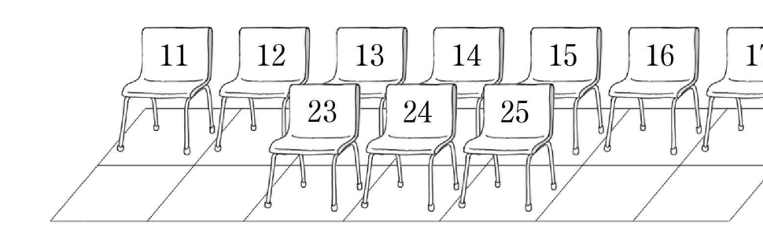
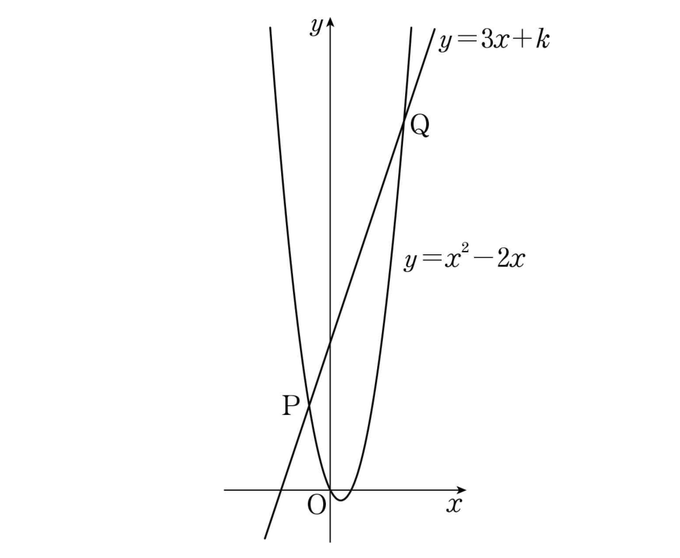

2. 2021년 3월 2번 · 2점 · 고1 범위 · 복소수와 이차방정식 · G2H-02#1
원본 (내부용)등식 $3x+ ( 2+i ) y=1+2i$를 만족시키는 두 실수 $x$, $y$에 대하여 $x+y$의 값은? (단, $i= \sqrt{-1}$) [2점]
① $1$② $2$③ $3$④ $4$⑤ $5$
원본 정답 ①
원본 풀이 (내부용)[출제의도] 두 복소수가 서로 같을 조건을 이해하여 식의 값을 구한다.
\(
3x+(2+i)y=1+2i
\)
\(
(3x+2y)+yi=1+2i
\)
두 복소수의 실수부분과 허수부분을 각각 비교하면
\(
3x+2y=1,\qquad y=2
\)
\(
x=-1,\qquad y=2
\)
이므로
\(
x+y=-1+2=1
\)
생성기 숫자판 1/6 · G2H-02#1등식 $2x+\left(2-i\right)y=4+i$를 만족시키는 두 실수 $x$, $y$에 대하여 $x+y$의 값으로 옳은 것을 고르세요. (단, $i=\sqrt{-1}$)
① $2$② $3$③ $4$④ $5$⑤ $6$
정답① $2$ 좌변을 정리하면 $\left(2x+2y\right)-yi$ 복소수가 서로 같을 조건에 의하여 $2x+2y=4$, $-y=1$ $y=-1$, $x=3$이므로 $x+y=2$
숫자: 원본 3 2 1 2 → 쌍둥이 2 2 4 · 같은 수: 2
생성기 숫자판 2/6 · G2H-02#1등식 $\left(3+4i\right)\left(3-4i\right)$를 만족시키는 두 실수 $x$, $y$에 대하여 $x+y$의 값으로 옳은 것을 고르세요. (단, $i=\sqrt{-1}$)
생성기 숫자판 6/6 · G2H-02#1등식 $1+4i^{2}$을 만족시키는 두 실수 $x$, $y$에 대하여 $x+y$의 값으로 옳은 것을 고르세요. (단, $i=\sqrt{-1}$)
① $-3-i$② $-4$③ $-3$④ $-2$⑤ $-3+i$
정답③ $-3$ $i^{2}=-1$이므로 $1+4i^{2}=1-4$ $=-3$
숫자: 원본 3 2 1 2 → 쌍둥이 1 4 · 같은 수: 1
3. 2021년 3월 3번 · 2점 · 고1 범위 · 집합 · G2H-03b#7
원본 (내부용)두 집합 $A= \{ 2, 3, 4, 5, 6 \}$, $B= \{ 1, 3, a \}$ 에 대하여 집합 $A{\cap }B$의 모든 원소의 합이 $8$일 때, 자연수 $a$의 값은? [2점]
① $4$② $5$③ $6$④ $7$⑤ $8$
원본 정답 ②
원본 풀이 (내부용)[출제의도] 집합의 연산을 이해하여 원소를 구한다.
두 집합 \(A=\{2,3,4,5,6\}\), \(B=\{1,3,a,\alpha\}\)에서 \(3\in(A\cap B)\)이고 \(\alpha\notin(A\cap B)\)이다.
집합 \(A\cap B\)의 모든 원소의 합이 8이려면
\(
\alpha\in(A\cap B),\quad\text{즉 }A\cap B=\{3,\alpha\}
\)
이고
\(
3+\alpha=8
\)
따라서 \(\alpha=5\).
생성기 숫자판 1/6 · G2H-03b#7두 집합 $A=\left\{5,\ 6,\ 7,\ 8,\ 9\right\}$, $B=\left\{9,\ 10,\ a\right\}$에 대하여 집합 $A\cap B$의 모든 원소의 합이 $17$일 때, 자연수 $a$의 값으로 옳은 것을 고르세요.
① $5$② $6$③ $7$④ $8$⑤ $9$
정답④ $8$ $10\notin A$, $9\in A$이므로 $a\notin A$이면 $A\cap B=\left\{9\right\}$이 되어 합이 $17$이 될 수 없습니다. 따라서 $a\in A$이고 $A\cap B=\left\{9,\ a\right\}$, $9+a=17$ $a=8$
생성기 숫자판 2/6 · G2H-03b#7두 집합 $A=\left\{5,\ 6,\ 7,\ 8,\ 9\right\}$, $B=\left\{5,\ 10,\ a\right\}$에 대하여 집합 $A\cap B$의 모든 원소의 합이 $14$일 때, 자연수 $a$의 값으로 옳은 것을 고르세요.
① $8$② $9$③ $10$④ $11$⑤ $12$
정답② $9$ $10\notin A$, $5\in A$이므로 $a\notin A$이면 $A\cap B=\left\{5\right\}$이 되어 합이 $14$가 될 수 없습니다. 따라서 $a\in A$이고 $A\cap B=\left\{5,\ a\right\}$, $5+a=14$ $a=9$
생성기 숫자판 3/6 · G2H-03b#7두 집합 $A=\left\{5,\ 6,\ 7,\ 8,\ 9\right\}$, $B=\left\{8,\ 11,\ a\right\}$에 대하여 집합 $A\cap B$의 모든 원소의 합이 $14$일 때, 자연수 $a$의 값으로 옳은 것을 고르세요.
① $3$② $4$③ $5$④ $6$⑤ $7$
정답④ $6$ $11\notin A$, $8\in A$이므로 $a\notin A$이면 $A\cap B=\left\{8\right\}$이 되어 합이 $14$가 될 수 없습니다. 따라서 $a\in A$이고 $A\cap B=\left\{8,\ a\right\}$, $8+a=14$ $a=6$
생성기 숫자판 4/6 · G2H-03b#7두 집합 $A=\left\{5,\ 6,\ 7,\ 8,\ 9\right\}$, $B=\left\{6,\ 11,\ a\right\}$에 대하여 집합 $A\cap B$의 모든 원소의 합이 $13$일 때, 자연수 $a$의 값으로 옳은 것을 고르세요.
① $5$② $6$③ $7$④ $8$⑤ $9$
정답③ $7$ $11\notin A$, $6\in A$이므로 $a\notin A$이면 $A\cap B=\left\{6\right\}$이 되어 합이 $13$이 될 수 없습니다. 따라서 $a\in A$이고 $A\cap B=\left\{6,\ a\right\}$, $6+a=13$ $a=7$
생성기 숫자판 5/6 · G2H-03b#7두 집합 $A=\left\{5,\ 6,\ 7,\ 8,\ 9\right\}$, $B=\left\{6,\ 10,\ a\right\}$에 대하여 집합 $A\cap B$의 모든 원소의 합이 $15$일 때, 자연수 $a$의 값으로 옳은 것을 고르세요.
① $8$② $9$③ $10$④ $11$⑤ $12$
정답② $9$ $10\notin A$, $6\in A$이므로 $a\notin A$이면 $A\cap B=\left\{6\right\}$이 되어 합이 $15$가 될 수 없습니다. 따라서 $a\in A$이고 $A\cap B=\left\{6,\ a\right\}$, $6+a=15$ $a=9$
생성기 숫자판 6/6 · G2H-03b#7두 집합 $A=\left\{5,\ 6,\ 7,\ 8,\ 9\right\}$, $B=\left\{8,\ 10,\ a\right\}$에 대하여 집합 $A\cap B$의 모든 원소의 합이 $17$일 때, 자연수 $a$의 값으로 옳은 것을 고르세요.
① $5$② $6$③ $7$④ $8$⑤ $9$
정답⑤ $9$ $10\notin A$, $8\in A$이므로 $a\notin A$이면 $A\cap B=\left\{8\right\}$이 되어 합이 $17$이 될 수 없습니다. 따라서 $a\in A$이고 $A\cap B=\left\{8,\ a\right\}$, $8+a=17$ $a=9$
생성기 숫자판 1/6 · G2f-17#1그림은 두 함수 $f:X\to Y$, $g:Y\to X$를 나타낸 것입니다. $\left(g\circ f\right)\left(7\right)-\left(f\circ g\right)\left(9\right)$의 값으로 옳은 것을 고르세요.
① $4$② $5$③ $6$④ $7$⑤ $8$
정답③ $6$ $\left(g\circ f\right)\left(7\right)=g\left(f\left(7\right)\right)=g\left(10\right)=9$ $\left(f\circ g\right)\left(9\right)=f\left(g\left(9\right)\right)=f\left(5\right)=3$ 따라서 $\left(g\circ f\right)\left(7\right)-\left(f\circ g\right)\left(9\right)=9-3=6$
숫자: 원본 3 3 → 쌍둥이 7 9
생성기 숫자판 2/6 · G2f-17#1그림은 두 함수 $f:X\to Y$, $g:Y\to X$를 나타낸 것입니다. $\left(g\circ f\right)\left(5\right)-\left(f\circ g\right)\left(9\right)$의 값으로 옳은 것을 고르세요.
① $2$② $3$③ $4$④ $5$⑤ $6$
정답② $3$ $\left(g\circ f\right)\left(5\right)=g\left(f\left(5\right)\right)=g\left(9\right)=9$ $\left(f\circ g\right)\left(9\right)=f\left(g\left(9\right)\right)=f\left(9\right)=6$ 따라서 $\left(g\circ f\right)\left(5\right)-\left(f\circ g\right)\left(9\right)=9-6=3$
숫자: 원본 3 3 → 쌍둥이 5 9
생성기 숫자판 3/6 · G2f-17#1그림은 두 함수 $f:X\to Y$, $g:Y\to X$를 나타낸 것입니다. $\left(g\circ f\right)\left(8\right)-\left(f\circ g\right)\left(1\right)$의 값으로 옳은 것을 고르세요.
① $-13$② $-12$③ $-11$④ $-10$⑤ $-9$
정답⑤ $-9$ $\left(g\circ f\right)\left(8\right)=g\left(f\left(8\right)\right)=g\left(10\right)=1$ $\left(f\circ g\right)\left(1\right)=f\left(g\left(1\right)\right)=f\left(8\right)=10$ 따라서 $\left(g\circ f\right)\left(8\right)-\left(f\circ g\right)\left(1\right)=1-10=-9$
숫자: 원본 3 3 → 쌍둥이 8 1
생성기 숫자판 4/6 · G2f-17#1그림은 두 함수 $f:X\to Y$, $g:Y\to X$를 나타낸 것입니다. $\left(g\circ f\right)\left(5\right)-\left(f\circ g\right)\left(9\right)$의 값으로 옳은 것을 고르세요.
① $-4$② $-3$③ $-2$④ $-1$⑤ $0$
정답③ $-2$ $\left(g\circ f\right)\left(5\right)=g\left(f\left(5\right)\right)=g\left(1\right)=5$ $\left(f\circ g\right)\left(9\right)=f\left(g\left(9\right)\right)=f\left(6\right)=7$ 따라서 $\left(g\circ f\right)\left(5\right)-\left(f\circ g\right)\left(9\right)=5-7=-2$
숫자: 원본 3 3 → 쌍둥이 5 9
생성기 숫자판 5/6 · G2f-17#1그림은 두 함수 $f:X\to Y$, $g:Y\to X$를 나타낸 것입니다. $\left(g\circ f\right)\left(6\right)-\left(f\circ g\right)\left(7\right)$의 값으로 옳은 것을 고르세요.
① $2$② $3$③ $4$④ $5$⑤ $6$
정답③ $4$ $\left(g\circ f\right)\left(6\right)=g\left(f\left(6\right)\right)=g\left(3\right)=7$ $\left(f\circ g\right)\left(7\right)=f\left(g\left(7\right)\right)=f\left(6\right)=3$ 따라서 $\left(g\circ f\right)\left(6\right)-\left(f\circ g\right)\left(7\right)=7-3=4$
숫자: 원본 3 3 → 쌍둥이 6 7
생성기 숫자판 6/6 · G2f-17#1그림은 두 함수 $f:X\to Y$, $g:Y\to X$를 나타낸 것입니다. $\left(g\circ f\right)\left(2\right)-\left(f\circ g\right)\left(4\right)$의 값으로 옳은 것을 고르세요.
① $6$② $7$③ $8$④ $9$⑤ $10$
정답① $6$ $\left(g\circ f\right)\left(2\right)=g\left(f\left(2\right)\right)=g\left(5\right)=10$ $\left(f\circ g\right)\left(4\right)=f\left(g\left(4\right)\right)=f\left(10\right)=4$ 따라서 $\left(g\circ f\right)\left(2\right)-\left(f\circ g\right)\left(4\right)=10-4=6$
숫자: 원본 3 3 → 쌍둥이 2 4
8. 2021년 3월 8번 · 3점 · 고1 범위 · 도형의 이동 · G2H-05b#1
원본 (내부용)원 $x^{2} + ( y+4 )^{2} =10$을 $x$축의 방향으로 $-4$만큼, $y$축의 방향으로 $2$만큼 평행이동하였더니 원 $x^{2} +y^{2} +ax+by+c=0$과 일치하였다. $a+b+c$의 값은? (단, $a$, $b$, $c$는 상수이다.) [3점]
① $14$② $16$③ $18$④ $20$⑤ $22$
원본 정답 ⑤
원본 풀이 (내부용)[출제의도] 도형의 평행이동을 이해하여 식의 값을 구한다.
원 \(x^2+(y+4)^2=10\)을 \(x\)축의 방향으로 \(-4\)만큼, \(y\)축의 방향으로 2만큼 평행이동하면
\(
(x+4)^2+\{(y-2)+4\}^2=10
\)
\(
(x+4)^2+(y+2)^2=10
\)
\(
x^2+y^2+8x+4y+10=0
\)
이므로
\(
a=8,\quad b=4,\quad c=10
\)
따라서
\(
a+b+c=8+4+10=22
\)
생성기 숫자판 1/5 · G2H-05b#1원 $\left(x-2\right)^{2}+\left(y+4\right)^{2}=4$를 $x$축의 방향으로 $3$만큼, $y$축의 방향으로 $1$만큼 평행이동하였더니 원 $x^{2}+y^{2}+ax+by+c=0$과 일치하였습니다. $a+b+c$의 값으로 옳은 것을 고르세요. (단, $a$, $b$, $c$는 상수입니다.)
생성기 숫자판 1/6 · G2H-02#11연립방정식 $\begin{cases}3x-y=1\\9x^{2}-2x-y^{2}=15\end{cases}$의 해를 $x=a$, $y=b$라 할 때, $ab$의 값으로 옳은 것을 고르세요.
① $-44$② $41$③ $42$④ $43$⑤ $44$
정답⑤ $44$ $y=3x-1$을 둘째 식에 대입하면 $9x^{2}-2x-\left(3x-1\right)^{2}=15$ $4x-1=15$이므로 $x=4$, $y=11$ 따라서 $ab=44$
숫자: 원본 2 1 4 5 → 쌍둥이 3 1 9 2 15 · 같은 수: 1 2
생성기 숫자판 2/6 · G2H-02#11연립방정식 $\begin{cases}2x-y=1\\4x^{2}+2x-y^{2}=23\end{cases}$의 해를 $x=a$, $y=b$라 할 때, $ab$의 값으로 옳은 것을 고르세요.
① $-28$② $25$③ $26$④ $27$⑤ $28$
정답⑤ $28$ $y=2x-1$을 둘째 식에 대입하면 $4x^{2}+2x-\left(2x-1\right)^{2}=23$ $6x-1=23$이므로 $x=4$, $y=7$ 따라서 $ab=28$
숫자: 원본 2 1 4 5 → 쌍둥이 2 1 4 2 23 · 같은 수: 1 2 4
생성기 숫자판 3/6 · G2H-02#11연립방정식 $\begin{cases}2x-y=2\\4x^{2}+1x-y^{2}=14\end{cases}$의 해를 $x=a$, $y=b$라 할 때, $ab$의 값으로 옳은 것을 고르세요.
① $-4$② $1$③ $2$④ $3$⑤ $4$
정답⑤ $4$ $y=2x-2$를 둘째 식에 대입하면 $4x^{2}+1x-\left(2x-2\right)^{2}=14$ $9x-4=14$이므로 $x=2$, $y=2$ 따라서 $ab=4$
숫자: 원본 2 1 4 5 → 쌍둥이 2 2 4 1 14 · 같은 수: 1 2 4
생성기 숫자판 4/6 · G2H-02#11연립방정식 $\begin{cases}3x-y=3\\9x^{2}-2x-y^{2}=55\end{cases}$의 해를 $x=a$, $y=b$라 할 때, $ab$의 값으로 옳은 것을 고르세요.
① $35$② $36$③ $37$④ $38$⑤ $39$
정답② $36$ $y=3x-3$을 둘째 식에 대입하면 $9x^{2}-2x-\left(3x-3\right)^{2}=55$ $16x-9=55$이므로 $x=4$, $y=9$ 따라서 $ab=36$
숫자: 원본 2 1 4 5 → 쌍둥이 3 3 9 2 55 · 같은 수: 2
생성기 숫자판 5/6 · G2H-02#11연립방정식 $\begin{cases}3x-y=2\\9x^{2}+2x-y^{2}=38\end{cases}$의 해를 $x=a$, $y=b$라 할 때, $ab$의 값으로 옳은 것을 고르세요.
① $20$② $21$③ $22$④ $23$⑤ $24$
정답② $21$ $y=3x-2$를 둘째 식에 대입하면 $9x^{2}+2x-\left(3x-2\right)^{2}=38$ $14x-4=38$이므로 $x=3$, $y=7$ 따라서 $ab=21$
숫자: 원본 2 1 4 5 → 쌍둥이 3 2 9 2 38 · 같은 수: 2
생성기 숫자판 6/6 · G2H-02#11연립방정식 $\begin{cases}2x-y=2\\4x^{2}+2x-y^{2}=16\end{cases}$의 해를 $x=a$, $y=b$라 할 때, $ab$의 값으로 옳은 것을 고르세요.
① $-4$② $1$③ $2$④ $3$⑤ $4$
정답⑤ $4$ $y=2x-2$를 둘째 식에 대입하면 $4x^{2}+2x-\left(2x-2\right)^{2}=16$ $10x-4=16$이므로 $x=2$, $y=2$ 따라서 $ab=4$
숫자: 원본 2 1 4 5 → 쌍둥이 2 2 4 2 16 · 같은 수: 2 4
10. 2021년 3월 10번 · 3점 · 고1 범위 · 원의 방정식 · G2M8-06#6
원본 (내부용)직선 $x+2y+5=0$이 원 $( x-1 )^{2} +y^{2} =r^{2}$에 접할 때, 양수 $r$의 값은? [3점]
① $\frac{7 \sqrt{5}}{5}$② $\frac{6 \sqrt{5}}{5}$③ $\sqrt{5}$④ $\frac{4 \sqrt{5}}{5}$⑤ $\frac{3 \sqrt{5}}{5}$
원본 정답 ②
원본 풀이 (내부용)[출제의도] 직선에 접하는 원의 반지름의 길이를 구하는 문제를 해결한다.
직선 \(x+2y+5=0\)에 접하고 원의 중심이 \((1,0)\)인 원의 반지름의 길이 \(r\)는 원의 중심 \((1,0)\)과 직선 \(x+2y+5=0\) 사이의 거리와 같다.
\(
r=\frac{|1\times1+2\times0+5|}{\sqrt{1^2+2^2}}
=\frac{6\sqrt5}{5}
\)
**[다른 풀이]**
\(
x+2y+5=0
\)
에서 \(x=-2y-5\).
\(x=-2y-5\)를 \((x-1)^2+y^2=r^2\)에 대입하면
\(
\begin{aligned}
\{(-2y-5)-1\}^2+y^2&=r^2\\
5y^2+24y+36-r^2&=0
\end{aligned}
\)
이차방정식 \(5y^2+24y+36-r^2=0\)의 판별식을 \(D\)라 할 때 \(D=0\)이어야 한다.
\(
\begin{aligned}
\frac D4
&=12^2-5(36-r^2)\\
&=5r^2-36=0
\end{aligned}
\)
이므로
\(
r^2=\frac{36}{5}
\)
\(r>0\)이므로
\(
r=\frac{6\sqrt5}{5}
\)
생성기 숫자판 1/6 · G2M8-06#6직선 $2x-y-4=0$이 원 $\left(x-1\right)^{2}+y^{2}=r^{2}$에 접할 때, 양수 $r$의 값으로 옳은 것을 고르세요.
① $\frac{\sqrt{5}}{5}$② $\frac{2\sqrt{5}}{5}$③ $\frac{3\sqrt{5}}{5}$④ $\frac{4\sqrt{5}}{5}$⑤ $\sqrt{5}$
정답② $\frac{2\sqrt{5}}{5}$ 원의 중심 $\left(1,\ 0\right)$과 직선 $2x-y-4=0$ 사이의 거리가 반지름의 길이 $r$과 같으므로 $r=\frac{\left|2\times 1+\left(-1\right)\times 0-4\right|}{\sqrt{2^{2}+\left(-1\right)^{2}}}=\frac{2}{\sqrt{5}}=\frac{2\sqrt{5}}{5}$
숫자: 원본 2 5 0 1 → 쌍둥이 2 4 0 1 · 같은 수: 0 1 2
생성기 숫자판 2/6 · G2M8-06#6직선 $x-2y-6=0$이 원 $\left(x+2\right)^{2}+y^{2}=r^{2}$에 접할 때, 양수 $r$의 값으로 옳은 것을 고르세요.
① $\frac{6\sqrt{5}}{5}$② $\frac{7\sqrt{5}}{5}$③ $\frac{8\sqrt{5}}{5}$④ $\frac{9\sqrt{5}}{5}$⑤ $2\sqrt{5}$
정답③ $\frac{8\sqrt{5}}{5}$ 원의 중심 $\left(-2,\ 0\right)$과 직선 $x-2y-6=0$ 사이의 거리가 반지름의 길이 $r$과 같으므로 $r=\frac{\left|1\times \left(-2\right)+\left(-2\right)\times 0-6\right|}{\sqrt{1^{2}+\left(-2\right)^{2}}}=\frac{8}{\sqrt{5}}=\frac{8\sqrt{5}}{5}$
숫자: 원본 2 5 0 1 → 쌍둥이 2 6 0 2 · 같은 수: 0 2
생성기 숫자판 3/6 · G2M8-06#6직선 $x-2y-1=0$이 원 $\left(x-2\right)^{2}+y^{2}=r^{2}$에 접할 때, 양수 $r$의 값으로 옳은 것을 고르세요.
① $\frac{\sqrt{5}}{5}$② $\frac{2\sqrt{5}}{5}$③ $\frac{3\sqrt{5}}{5}$④ $\frac{4\sqrt{5}}{5}$⑤ $\sqrt{5}$
정답① $\frac{\sqrt{5}}{5}$ 원의 중심 $\left(2,\ 0\right)$과 직선 $x-2y-1=0$ 사이의 거리가 반지름의 길이 $r$과 같으므로 $r=\frac{\left|1\times 2+\left(-2\right)\times 0-1\right|}{\sqrt{1^{2}+\left(-2\right)^{2}}}=\frac{1}{\sqrt{5}}=\frac{\sqrt{5}}{5}$
숫자: 원본 2 5 0 1 → 쌍둥이 2 1 0 2 · 같은 수: 0 1 2
생성기 숫자판 4/6 · G2M8-06#6직선 $2x+y-2=0$이 원 $\left(x-2\right)^{2}+y^{2}=r^{2}$에 접할 때, 양수 $r$의 값으로 옳은 것을 고르세요.
① $\frac{2\sqrt{5}}{5}$② $\frac{3\sqrt{5}}{5}$③ $\frac{4\sqrt{5}}{5}$④ $\sqrt{5}$⑤ $\frac{6\sqrt{5}}{5}$
정답① $\frac{2\sqrt{5}}{5}$ 원의 중심 $\left(2,\ 0\right)$과 직선 $2x+y-2=0$ 사이의 거리가 반지름의 길이 $r$과 같으므로 $r=\frac{\left|2\times 2+1\times 0-2\right|}{\sqrt{2^{2}+1^{2}}}=\frac{2}{\sqrt{5}}=\frac{2\sqrt{5}}{5}$
숫자: 원본 2 5 0 1 → 쌍둥이 2 2 0 2 · 같은 수: 0 2
생성기 숫자판 5/6 · G2M8-06#6직선 $2x+y-6=0$이 원 $\left(x-2\right)^{2}+y^{2}=r^{2}$에 접할 때, 양수 $r$의 값으로 옳은 것을 고르세요.
① $\frac{2\sqrt{5}}{5}$② $\frac{3\sqrt{5}}{5}$③ $\frac{4\sqrt{5}}{5}$④ $\sqrt{5}$⑤ $\frac{6\sqrt{5}}{5}$
정답① $\frac{2\sqrt{5}}{5}$ 원의 중심 $\left(2,\ 0\right)$과 직선 $2x+y-6=0$ 사이의 거리가 반지름의 길이 $r$과 같으므로 $r=\frac{\left|2\times 2+1\times 0-6\right|}{\sqrt{2^{2}+1^{2}}}=\frac{2}{\sqrt{5}}=\frac{2\sqrt{5}}{5}$
숫자: 원본 2 5 0 1 → 쌍둥이 2 6 0 2 · 같은 수: 0 2
생성기 숫자판 6/6 · G2M8-06#6직선 $2x+y-2=0$이 원 $\left(x+2\right)^{2}+y^{2}=r^{2}$에 접할 때, 양수 $r$의 값으로 옳은 것을 고르세요.
① $\frac{6\sqrt{5}}{5}$② $\frac{7\sqrt{5}}{5}$③ $\frac{8\sqrt{5}}{5}$④ $\frac{9\sqrt{5}}{5}$⑤ $2\sqrt{5}$
정답① $\frac{6\sqrt{5}}{5}$ 원의 중심 $\left(-2,\ 0\right)$과 직선 $2x+y-2=0$ 사이의 거리가 반지름의 길이 $r$과 같으므로 $r=\frac{\left|2\times \left(-2\right)+1\times 0-2\right|}{\sqrt{2^{2}+1^{2}}}=\frac{6}{\sqrt{5}}=\frac{6\sqrt{5}}{5}$
숫자: 원본 2 5 0 1 → 쌍둥이 2 2 0 2 · 같은 수: 0 2
11. 2021년 3월 11번 · 3점 · 고1 범위 · 집합 · G2H-03b#14
원본 (내부용)전체집합 $U= \{ x | x . .$는 $100$ 이하의 자연수$\}$의 두 부분집합 $A= \{ x | x . .$는 홀수$\}$, $B= \{ x | x . .$는 $7$의 배수$\}$ 에 대하여 $n ( A \cup B )$의 값은? [3점]
① $53$② $54$③ $55$④ $56$⑤ $57$
원본 정답 ⑤
원본 풀이 (내부용)[출제의도] 집합의 연산을 이해하여 합집합의 원소의 개수를 구한다.
\(
A=\{1,3,5,\ldots,99\}
\)
에서
\(
n(A)=50
\)
\(
B=\{7,14,21,\ldots,98\}
\)
에서
\(
n(B)=14
\)
\(
A\cap B=\{7,21,35,49,63,77,91\}
\)
에서
\(
n(A\cap B)=7
\)
이므로
\(
\begin{aligned}
n(A\cup B)
&=n(A)+n(B)-n(A\cap B)\\
&=50+14-7\\
&=57
\end{aligned}
\)
**[다른 풀이]**
\(
A\cup(B-A)=A\cup B,\qquad A\cap(B-A)=\varnothing
\)
이므로
\(
n(A\cup B)=n(A)+n(B-A)
\)
100 이하의 홀수의 개수는 50이므로 \(n(A)=50\).
100 이하의 자연수 중에서 7의 배수인 짝수는
\(
7\times2,\ 7\times4,\ 7\times6,\ \ldots,\ 7\times14
\)
에서 7개이므로
\(
n(B-A)=7
\)
\(
n(A\cup B)=n(A)+n(B-A)=50+7=57
\)
생성기 숫자판 1/6 · G2H-03b#14전체집합 $U=\{x\mid x\text{는 }100\text{ 이하의 자연수}\}$의 두 부분집합 $A=\{x\mid x\text{는 홀수}\}$, $B=\{x\mid x\text{는 }5\text{의 배수}\}$에 대하여 $n\left(A\cup B\right)$의 값으로 옳은 것을 고르세요.
① $60$② $61$③ $62$④ $63$⑤ $64$
정답① $60$ $n\left(A\right)=50$, $n\left(B\right)=20$ $A\cap B$는 $100$ 이하의 자연수 중 $5$의 배수인 홀수의 집합이므로 $n\left(A\cap B\right)=10$ $n\left(A\cup B\right)=50+20-10=60$
숫자: 원본 100 7 → 쌍둥이 100 5 · 같은 수: 100
생성기 숫자판 2/6 · G2H-03b#14전체집합 $U=\{x\mid x\text{는 }90\text{ 이하의 자연수}\}$의 두 부분집합 $A=\{x\mid x\text{는 홀수}\}$, $B=\{x\mid x\text{는 }5\text{의 배수}\}$에 대하여 $n\left(A\cup B\right)$의 값으로 옳은 것을 고르세요.
① $53$② $54$③ $55$④ $56$⑤ $57$
정답② $54$ $n\left(A\right)=45$, $n\left(B\right)=18$ $A\cap B$는 $90$ 이하의 자연수 중 $5$의 배수인 홀수의 집합이므로 $n\left(A\cap B\right)=9$ $n\left(A\cup B\right)=45+18-9=54$
숫자: 원본 100 7 → 쌍둥이 90 5
생성기 숫자판 3/6 · G2H-03b#14전체집합 $U=\{x\mid x\text{는 }90\text{ 이하의 자연수}\}$의 두 부분집합 $A=\{x\mid x\text{는 홀수}\}$, $B=\{x\mid x\text{는 }3\text{의 배수}\}$에 대하여 $n\left(A\cup B\right)$의 값으로 옳은 것을 고르세요.
① $59$② $60$③ $61$④ $62$⑤ $63$
정답② $60$ $n\left(A\right)=45$, $n\left(B\right)=30$ $A\cap B$는 $90$ 이하의 자연수 중 $3$의 배수인 홀수의 집합이므로 $n\left(A\cap B\right)=15$ $n\left(A\cup B\right)=45+30-15=60$
숫자: 원본 100 7 → 쌍둥이 90 3
생성기 숫자판 4/6 · G2H-03b#14전체집합 $U=\{x\mid x\text{는 }90\text{ 이하의 자연수}\}$의 두 부분집합 $A=\{x\mid x\text{는 홀수}\}$, $B=\{x\mid x\text{는 }11\text{의 배수}\}$에 대하여 $n\left(A\cup B\right)$의 값으로 옳은 것을 고르세요.
① $48$② $49$③ $50$④ $51$⑤ $52$
정답② $49$ $n\left(A\right)=45$, $n\left(B\right)=8$ $A\cap B$는 $90$ 이하의 자연수 중 $11$의 배수인 홀수의 집합이므로 $n\left(A\cap B\right)=4$ $n\left(A\cup B\right)=45+8-4=49$
숫자: 원본 100 7 → 쌍둥이 90 11
생성기 숫자판 5/6 · G2H-03b#14전체집합 $U=\{x\mid x\text{는 }60\text{ 이하의 자연수}\}$의 두 부분집합 $A=\{x\mid x\text{는 홀수}\}$, $B=\{x\mid x\text{는 }7\text{의 배수}\}$에 대하여 $n\left(A\cup B\right)$의 값으로 옳은 것을 고르세요.
① $32$② $33$③ $34$④ $35$⑤ $36$
정답③ $34$ $n\left(A\right)=30$, $n\left(B\right)=8$ $A\cap B$는 $60$ 이하의 자연수 중 $7$의 배수인 홀수의 집합이므로 $n\left(A\cap B\right)=4$ $n\left(A\cup B\right)=30+8-4=34$
숫자: 원본 100 7 → 쌍둥이 60 7 · 같은 수: 7
생성기 숫자판 6/6 · G2H-03b#14전체집합 $U=\{x\mid x\text{는 }60\text{ 이하의 자연수}\}$의 두 부분집합 $A=\{x\mid x\text{는 홀수}\}$, $B=\{x\mid x\text{는 }3\text{의 배수}\}$에 대하여 $n\left(A\cup B\right)$의 값으로 옳은 것을 고르세요.
① $39$② $40$③ $41$④ $42$⑤ $43$
정답② $40$ $n\left(A\right)=30$, $n\left(B\right)=20$ $A\cap B$는 $60$ 이하의 자연수 중 $3$의 배수인 홀수의 집합이므로 $n\left(A\cap B\right)=10$ $n\left(A\cup B\right)=30+20-10=40$
숫자: 원본 100 7 → 쌍둥이 60 3
12. 2021년 3월 12번 · 3점 · 고1 범위 · 평면좌표 · G2H-05b#11
원본 (내부용)좌표평면에 세 점 $\mathrm{A}(-2, 0)$, $\mathrm{B}(0, 4)$, $\mathrm{C} ( a, b )$를 꼭짓점으로 하는 삼각형 $\mathrm{ABC}$가 있다. $\overline{AC} = \overline{BC}$이고 삼각형 $\mathrm{ABC}$의 무게중심이 $y$축 위에 있을 때, $a+b$의 값은? [3점]
① $\frac{1}{2}$② $1$③ $\frac{3}{2}$④ $2$⑤ $\frac{5}{2}$
원본 정답 ⑤
원본 풀이 (내부용)[출제의도] 두 점 사이의 거리와 삼각형의 무게중심을 이해하여 점의 좌표를 구한다.
\(
\overline{AC}
=\sqrt{\{a-(-2)\}^2+(b-0)^2}
=\sqrt{a^2+b^2+4a+4}
\)
\(
\overline{BC}
=\sqrt{(a-0)^2+(b-4)^2}
=\sqrt{a^2+b^2-8b+16}
\)
\(\overline{AC}=\overline{BC}\)에서 \(\overline{AC}^2=\overline{BC}^2\)이므로
\(
a^2+b^2+4a+4=a^2+b^2-8b+16
\)
\(
4a+8b=12
\)
\(
a+2b=3\qquad\cdots\cdots\text{①}
\)
삼각형 \(ABC\)의 무게중심의 좌표는
\(
\left(\frac{-2+0+a}{3},\frac{0+4+b}{3}\right)
=
\left(\frac{-2+a}{3},\frac{4+b}{3}\right)
\)
이고 이 점이 \(y\)축 위에 있으므로
\(
\frac{-2+a}{3}=0,\quad a=2
\)
①에서 \(2+2b=3,\ b=\frac12\).
따라서
\(
a+b=2+\frac12=\frac52
\)
**[다른 풀이]**
삼각형 \(ABC\)에서 \(\overline{AC}=\overline{BC}\)인 이등변삼각형이므로 점 \(C\)는 선분 \(AB\)의 수직이등분선 위에 있다.
선분 \(AB\)의 기울기를 \(m\)이라 하면 직선 \(AB\)의 기울기는
\(
\frac{4-0}{0-(-2)}=2
\)
이므로
\(
2m=-1,\quad m=-\frac12
\)
선분 \(AB\)의 중점을 \(M\)이라 하면 점 \(M\)의 좌표는
\(
\left(\frac{-2+0}{2},\frac{0+4}{2}\right),
\quad\text{즉 }(-1,2)
\)
따라서 선분 \(AB\)의 수직이등분선의 방정식은
\(
y=-\frac12\{x-(-1)\}+2
\)
\(
y=-\frac12x+\frac32
\)
삼각형 \(ABC\)의 무게중심을 \(G\)라 하면 점 \(G\)는 선분 \(AB\)의 수직이등분선 위에 있다. 또한 점 \(G\)가 \(y\)축 위에 있으므로
\(
G\left(0,\frac32\right)
\)
그림에는 \(A=(-2,0)\), \(B=(0,4)\), \(C=(a,b)\)인 삼각형 \(ABC\)와 좌표축이 표시되어 있다. \(M\)은 \(AB\)의 중점이고 \(MC\perp AB\)이며 \(AM=MB\) 표시가 있다. \(G\)는 \(MC\) 위에 있고 \(MC:GC=3:2\)로 표시되어 있다.
## 교사용/정답 자료: 해설
생성기 숫자판 1/6 · G2H-05b#11좌표평면에 세 점 $\mathrm{A}\left(1,\ 0\right)$, $\mathrm{B}\left(0,\ 4\right)$, $\mathrm{C}\left(a,\ b\right)$를 꼭짓점으로 하는 삼각형 $\mathrm{ABC}$가 있습니다. $\overline{\mathrm{AC}}=\overline{\mathrm{BC}}$이고 삼각형 $\mathrm{ABC}$의 무게중심이 $y$축 위에 있을 때, $a+b$의 값으로 옳은 것을 고르세요.
① $-\frac{5}{8}$② $-\frac{5}{16}$③ $0$④ $\frac{5}{16}$⑤ $\frac{5}{8}$
생성기 숫자판 2/6 · G2H-05b#11좌표평면에 세 점 $\mathrm{A}\left\{6,\ 8,\ 9,\ 10,\ 11\right\}$, $\mathrm{B}\left\{2,\ 3,\ 6,\ 8,\ 10,\ 11\right\}$, $\mathrm{C}\left(a,\ b\right)$를 꼭짓점으로 하는 삼각형 $\mathrm{ABC}$가 있습니다. $\overline{\mathrm{AC}}=\overline{\mathrm{BC}}$이고 삼각형 $\mathrm{ABC}$의 무게중심이 $y$축 위에 있을 때, $a+b$의 값으로 옳은 것을 고르세요.
생성기 숫자판 3/6 · G2H-05b#11좌표평면에 세 점 $\mathrm{A}\left(-3,\ 0\right)$, $\mathrm{B}\left(0,\ 6\right)$, $\mathrm{C}\left(a,\ b\right)$를 꼭짓점으로 하는 삼각형 $\mathrm{ABC}$가 있습니다. $\overline{\mathrm{AC}}=\overline{\mathrm{BC}}$이고 삼각형 $\mathrm{ABC}$의 무게중심이 $y$축 위에 있을 때, $a+b$의 값으로 옳은 것을 고르세요.
① $\frac{7}{2}$② $\frac{15}{4}$③ $4$④ $\frac{17}{4}$⑤ $\frac{9}{2}$
생성기 숫자판 4/6 · G2H-05b#11좌표평면에 세 점 $\mathrm{A}\left\{1,\ 3,\ 6,\ 9,\ 11\right\}$, $\mathrm{B}\left\{1,\ 5,\ 6,\ 9,\ 10,\ 11\right\}$, $\mathrm{C}\left(a,\ b\right)$를 꼭짓점으로 하는 삼각형 $\mathrm{ABC}$가 있습니다. $\overline{\mathrm{AC}}=\overline{\mathrm{BC}}$이고 삼각형 $\mathrm{ABC}$의 무게중심이 $y$축 위에 있을 때, $a+b$의 값으로 옳은 것을 고르세요.
생성기 숫자판 5/6 · G2H-05b#11좌표평면에 세 점 $\mathrm{A}\left(-1,\ 0\right)$, $\mathrm{B}\left(0,\ 3\right)$, $\mathrm{C}\left(a,\ b\right)$를 꼭짓점으로 하는 삼각형 $\mathrm{ABC}$가 있습니다. $\overline{\mathrm{AC}}=\overline{\mathrm{BC}}$이고 삼각형 $\mathrm{ABC}$의 무게중심이 $y$축 위에 있을 때, $a+b$의 값으로 옳은 것을 고르세요.
생성기 숫자판 6/6 · G2H-05b#11좌표평면에 세 점 $\mathrm{A}\left(4,\ 0\right)$, $\mathrm{B}\left(0,\ 6\right)$, $\mathrm{C}\left(a,\ b\right)$를 꼭짓점으로 하는 삼각형 $\mathrm{ABC}$가 있습니다. $\overline{\mathrm{AC}}=\overline{\mathrm{BC}}$이고 삼각형 $\mathrm{ABC}$의 무게중심이 $y$축 위에 있을 때, $a+b$의 값으로 옳은 것을 고르세요.
13. 2021년 3월 13번 · 3점 · 고1 범위 · 이차방정식과 이차함수 · G2H-02b#11
원본 (내부용)이차함수 $f(x)$가 다음 조건을 만족시킬 때, $f(2)$의 값은? [3점] (가)함수 $f(x)$는 $x=1$에서 최댓값 $9$를 갖는다. (나)곡선 $y=f(x)$에 접하고 직선 $2x-y+1=0$과 평행한 직선의 $y$절편은 $9$이다.
① $\frac{9}{2}$② $\frac{11}{2}$③ $\frac{13}{2}$④ $\frac{15}{2}$⑤ $\frac{17}{2}$
원본 정답 ⑤
원본 풀이 (내부용)[출제의도] 이차함수의 그래프와 직선의 위치 관계를 이용하여 함수를 구하는 문제를 해결한다.
조건 (가)에서
\(
f(x)=a(x-1)^2+9\quad(a<0)
\)
인 상수 \(a\)를 구할 수 있다.
조건 (나)에서 직선 \(2x-y+1=0\), 즉 \(y=2x+1\)의 기울기가 2이므로 이 직선과 평행한 직선의 기울기는 2이다.
따라서 기울기가 2이고 \(y\)절편이 9인 직선 \(y=2x+9\)가 곡선 \(y=f(x)\)에 접하므로
\(
a(x-1)^2+9=2x+9
\)
\(
ax^2-2(a+1)x+a=0
\)
이차방정식 \(ax^2-2(a+1)x+a=0\)의 판별식을 \(D\)라 할 때, \(D=0\)이어야 한다.
\(
\begin{aligned}
\frac D4
&=\{-(a+1)\}^2-a\times a\\
&=2a+1=0
\end{aligned}
\)
\(
a=-\frac12
\)
\(
f(x)=-\frac12(x-1)^2+9
\)
따라서
\(
\begin{aligned}
f(2)
&=-\frac12(2-1)^2+9\\
&=\frac{17}{2}
\end{aligned}
\)
생성기 숫자판 1/6 · G2H-02b#11이차함수 $f\left(x\right)$가 다음 조건을 만족시킬 때, $f\left(31\right)$의 값으로 옳은 것을 고르세요. (가) 함수 $f\left(x\right)$는 $x=29$에서 최댓값 $158$을 갖습니다. (나) 곡선 $y=f\left(x\right)$에 접하고 직선 $4x-y+7=0$과 평행한 직선의 $y$절편은 $38$입니다.
① $152$② $153$③ $154$④ $155$⑤ $156$
정답③ $154$ $f(x)=-(x-29)^2+158$의 그래프에 접하는 직선의 기울기가 $4$입니다. 접점의 $x$좌표를 $t$라 하면 $f\prime(t)=-2(t-29)=4$이므로 $t=27$이고, 접선의 $y$절편은 $f(t)-4t=38$입니다. 따라서 정답은 $1$입니다. $f(31)=-(31-29)^2+158=154$입니다.
생성기 숫자판 2/6 · G2H-02b#11이차함수 $f\left(x\right)$가 다음 조건을 만족시킬 때, $f\left(14\right)$의 값으로 옳은 것을 고르세요. (가) 함수 $f\left(x\right)$는 $x=12$에서 최댓값 $73$을 갖습니다. (나) 곡선 $y=f\left(x\right)$에 접하고 직선 $4x-y+7=0$과 평행한 직선의 $y$절편은 $21$입니다.
① $67$② $68$③ $69$④ $70$⑤ $71$
정답③ $69$ $f(x)=-(x-12)^2+73$의 그래프에 접하는 직선의 기울기가 $4$입니다. 접점의 $x$좌표를 $t$라 하면 $f\prime(t)=-2(t-12)=4$이므로 $t=10$이고, 접선의 $y$절편은 $f(t)-4t=21$입니다. 따라서 정답은 $1$입니다. $f(14)=-(14-12)^2+73=69$입니다.
생성기 숫자판 3/6 · G2H-02b#11이차함수 $f\left(x\right)$가 다음 조건을 만족시킬 때, $f\left(25\right)$의 값으로 옳은 것을 고르세요. (가) 함수 $f\left(x\right)$는 $x=23$에서 최댓값 $128$을 갖습니다. (나) 곡선 $y=f\left(x\right)$에 접하고 직선 $4x-y+7=0$과 평행한 직선의 $y$절편은 $32$입니다.
① $122$② $123$③ $124$④ $125$⑤ $126$
정답③ $124$ $f(x)=-(x-23)^2+128$의 그래프에 접하는 직선의 기울기가 $4$입니다. 접점의 $x$좌표를 $t$라 하면 $f\prime(t)=-2(t-23)=4$이므로 $t=21$이고, 접선의 $y$절편은 $f(t)-4t=32$입니다. 따라서 정답은 $1$입니다. $f(25)=-(25-23)^2+128=124$입니다.
생성기 숫자판 4/6 · G2H-02b#11이차함수 $f\left(x\right)$가 다음 조건을 만족시킬 때, $f\left(18\right)$의 값으로 옳은 것을 고르세요. (가) 함수 $f\left(x\right)$는 $x=16$에서 최댓값 $93$을 갖습니다. (나) 곡선 $y=f\left(x\right)$에 접하고 직선 $4x-y+7=0$과 평행한 직선의 $y$절편은 $25$입니다.
① $87$② $88$③ $89$④ $90$⑤ $91$
정답③ $89$ $f(x)=-(x-16)^2+93$의 그래프에 접하는 직선의 기울기가 $4$입니다. 접점의 $x$좌표를 $t$라 하면 $f\prime(t)=-2(t-16)=4$이므로 $t=14$이고, 접선의 $y$절편은 $f(t)-4t=25$입니다. 따라서 정답은 $1$입니다. $f(18)=-(18-16)^2+93=89$입니다.
생성기 숫자판 5/6 · G2H-02b#11이차함수 $f\left(x\right)$가 다음 조건을 만족시킬 때, $f\left(13\right)$의 값으로 옳은 것을 고르세요. (가) 함수 $f\left(x\right)$는 $x=11$에서 최댓값 $68$을 갖습니다. (나) 곡선 $y=f\left(x\right)$에 접하고 직선 $4x-y+7=0$과 평행한 직선의 $y$절편은 $20$입니다.
① $62$② $63$③ $64$④ $65$⑤ $66$
정답③ $64$ $f(x)=-(x-11)^2+68$의 그래프에 접하는 직선의 기울기가 $4$입니다. 접점의 $x$좌표를 $t$라 하면 $f\prime(t)=-2(t-11)=4$이므로 $t=9$이고, 접선의 $y$절편은 $f(t)-4t=20$입니다. 따라서 정답은 $1$입니다. $f(13)=-(13-11)^2+68=64$입니다.
생성기 숫자판 6/6 · G2H-02b#11이차함수 $f\left(x\right)$가 다음 조건을 만족시킬 때, $f\left(3\right)$의 값으로 옳은 것을 고르세요. (가) 함수 $f\left(x\right)$는 $x=2$에서 최댓값 $8$을 갖습니다. (나) 곡선 $y=f\left(x\right)$에 접하고 직선 $4x-y+2=0$과 평행한 직선의 $y$절편은 $2$입니다.
① $6$② $7$③ $8$④ $9$⑤ $10$
정답① $6$ $f\left(x\right)=-c\left(x-2\right)^{2}+8\ \left(c>0\right)$로 놓으면 조건 (나)의 직선은 $y=4x+2$ 방정식 $-c\left(x-2\right)^{2}+8=4x+2$, 즉 $cx^{2}-4cx+4c+4x-6=0$의 판별식이 $0$이어야 하므로 $c=2$ $f\left(3\right)=-2+8=6$
14. 2021년 3월 14번 · 4점 · 고1 범위 · 여러 가지 방정식과 부등식 · 4점 쌍둥이
원본 (내부용)실수 $x$에 대한 두 조건 $p$, $q$가 다음과 같다. $p$: $x^{2} -4x-12=0$, $q$: $| x-3 | >k$ $p$가 $\sim q$이기 위한 충분조건이 되도록 하는 자연수 $k$의 최솟값은? [4점]
① $3$② $4$③ $5$④ $6$⑤ $7$
원본 정답 ③
원본 풀이 (내부용)[출제의도] 방정식과 부등식을 이용하여 충분조건에 관한 문제를 해결한다.
조건 \(p\)의 진리집합을 \(P\)라 하면
\(
x^2-4x-12=0
\)
에서
\(
(x+2)(x-6)=0
\)
\(
x=-2\text{ 또는 }x=6
\)
이므로
\(
P=\{-2,6\}
\)
조건 \(q\)의 진리집합을 \(Q\)라 하면 조건 \(q\)에 대하여
\(
\sim q:\ |x-3|\le k
\)
이고 \(k\)는 자연수이므로
\(
-k\le x-3\le k
\)
\(
3-k\le x\le3+k
\)
즉,
\(
Q^c=\{x\mid 3-k\le x\le3+k\}
\)
이때 \(p\)가 \(\sim q\)이기 위한 충분조건이 되려면 \(P\subset Q^c\)이어야 한다.
그림은 수직선에 \(3-k,\ -2,\ 6,\ 3+k\)를 표시하고, \([3-k,3+k]\) 구간을 나타낸다.
즉,
\(
3-k\le-2\quad\text{이고}\quad 6\le3+k
\)
\(
k\ge5\quad\text{이고}\quad k\ge3
\)
이므로 자연수 \(k\)의 최솟값은 5이다.
쌍둥이 1/5 · 4점 쌍둥이실수 $x$에 대한 두 조건 $p$: $x^{2}-x-6=0$, $q$: $\left|x-4\right|>k$에 대하여 $p$가 $\sim q$이기 위한 충분조건이 되도록 하는 자연수 $k$의 최솟값으로 옳은 것을 고르세요.
쌍둥이 4/5 · 4점 쌍둥이실수 $x$에 대한 두 조건 $p$: $x^2-7x+12=0$, $q$: $|x-1|>k$에서 $p$가 $\sim q$의 충분조건이 되도록 하는 자연수 $k$의 최솟값을 $k_0$라 하겠습니다. 방정식 $p$의 두 근 중 $1$에서 더 먼 근의 값을 구하세요.
① $2$② $3$③ $4$④ $5$⑤ $6$
정답③ $4$ $p$의 근은 $3,4$이고, $\sim q$는 $|x-1|\le k$이다. 두 근이 $\sim q$를 만족하려면 $k\ge\max(2,3)=3$이므로 $k_0=3$ $1$에서 더 먼 근은 $4$
숫자: 원본 4 12 0 3 → 쌍둥이 7 12 0 1 0 1 · 같은 수: 0 12
쌍둥이 5/5 · 4점 쌍둥이실수 $x$에 대한 두 조건 $p$: $x^2-5x+4=0$, $q$: $|x-2|>k$에서 $p$가 $\sim q$의 충분조건이 되도록 하는 자연수 $k$의 최솟값을 $k_0$라 하겠습니다. 방정식 $p$의 두 근 중 $2$에서 더 먼 근의 값을 구하세요.
① $1$② $2$③ $3$④ $4$⑤ $5$
정답④ $4$ $p$의 근은 $1,4$이고, $\sim q$는 $|x-2|\le k$이다. 두 근에서 $2$까지의 거리는 각각 $1,2$이므로 $k_0=2$ $2$에서 더 먼 근은 $4$
숫자: 원본 4 12 0 3 → 쌍둥이 5 4 0 2 0 2 · 같은 수: 0 4
15. 2021년 3월 15번 · 4점 · 고1 범위 · 도형의 이동 · 4점 쌍둥이
원본 (내부용)좌표평면에서 세 점 $\mathrm{A}$$( 1, 3 )$, $\mathrm{B}$$( a, 5 )$, $\mathrm{C}$$(b, c)$가 다음 조건을 만족시킨다. (가) 두 직선 $\mathrm{OA}$, $\mathrm{OB}$는 서로 수직이다. (나) 두 점 $\mathrm{B}$, $\mathrm{C}$는 직선 $y=x$에 대하여 서로 대칭이다. 직선 $\mathrm{AC}$의 $y$절편은? (단, $\mathrm{O}$는 원점이다.) [4점]
① $\frac{9}{2}$② $\frac{11}{2}$③ $\frac{13}{2}$④ $\frac{15}{2}$⑤ $\frac{17}{2}$
원본 정답 ④
원본 풀이 (내부용)[출제의도] 직선의 수직 조건과 대칭이동을 이용하여 직선의 방정식을 구하는 문제를 해결한다.
직선 \(OA\)의 기울기는
\(
\frac{3-0}{1-0}=3
\)
이고 직선 \(OB\)의 기울기를 \(m\)이라 하면 두 직선 \(OA,OB\)가 서로 수직이므로 두 직선의 기울기의 곱은 \(-1\)이어야 한다.
\(
3m=-1
\)
에서
\(
m=-\frac13
\)
즉, \(a\ne0\)이고 직선 \(OB\)의 기울기는
\(
\frac{5-0}{a-0}=\frac5a=-\frac13
\)
이므로
\(
a=-15
\)
점 \(B\)의 좌표는 \((-15,5)\).
두 점 \(B,C\)가 직선 \(y=x\)에 대하여 서로 대칭이므로
\(
b=5,\quad c=-15
\)
즉, \(A(1,3),\ B(-15,5),\ C(5,-15)\)이므로 직선 \(AC\)의 방정식은
\(
\begin{aligned}
y-3
&=\frac{-15-3}{5-1}(x-1)\\
y&=-\frac92x+\frac{15}{2}
\end{aligned}
\)
따라서 직선 \(AC\)의 \(y\)절편은 \(\frac{15}{2}\)이다.
쌍둥이 1/5 · 4점 쌍둥이좌표평면에서 A(2,3), B(a,4), C(b,c)가 있습니다. OA와 OB는 수직이고 B,C는 y=x에 대하여 대칭입니다. 직선 AC의 y절편은?
쌍둥이 2/5 · 4점 쌍둥이좌표평면에서 세 점 $A(2,\ 1)$, $B(a,\ 4)$, $C(b,\ c)$가 다음 조건을 만족시킵니다. (가) 두 직선 $OA$, $OB$는 서로 수직입니다. (나) 두 점 $B$, $C$는 직선 $y=x$에 대하여 서로 대칭입니다. 직선 $AC$의 $y$절편의 값으로 옳은 것을 고르세요. (단, $O$는 원점입니다.)
① $1$② $2$③ $3$④ $4$⑤ $5$
정답④ $4$ (가)에서 $\frac{1}{2}\times\frac{4}{a}=-1$이므로 $a=-2$ (나)에서 $C(4,\ -2)$ 직선 $AC$의 기울기는 $\frac{-2-1}{4-2}=-\frac{3}{2}$ 직선 $AC$: $y=-\frac{3}{2}(x-2)+1$이므로 $y$절편은 $4$
숫자: 원본 1 3 5 → 쌍둥이 2 1 4 · 같은 수: 1
쌍둥이 3/5 · 4점 쌍둥이좌표평면에서 세 점 $A(1,\ 2)$, $B(a,\ 3)$, $C(b,\ c)$가 다음 조건을 만족시킵니다. (가) 두 직선 $OA$, $OB$는 서로 수직입니다. (나) 두 점 $B$, $C$는 직선 $y=x$에 대하여 서로 대칭입니다. 직선 $AC$의 $y$절편의 값으로 옳은 것을 고르세요. (단, $O$는 원점입니다.)
① $2$② $3$③ $4$④ $5$⑤ $6$
정답⑤ $6$ (가)에서 $2\times\frac{3}{a}=-1$이므로 $a=-6$ (나)에서 $C(3,\ -6)$ 직선 $AC$의 기울기는 $\frac{-6-2}{3-1}=-4$ 직선 $AC$: $y=-4(x-1)+2$이므로 $y$절편은 $6$
숫자: 원본 1 3 5 → 쌍둥이 1 2 3 · 같은 수: 1 3
쌍둥이 4/5 · 4점 쌍둥이좌표평면에서 세 점 $A(2,\ 3)$, $B(a,\ 4)$, $C(b,\ c)$가 다음 조건을 만족시킵니다. (가) 두 직선 $OA$, $OB$는 서로 수직입니다. (나) 두 점 $B$, $C$는 직선 $y=x$에 대하여 서로 대칭입니다. 직선 $AC$의 $y$절편의 값으로 옳은 것을 고르세요. (단, $O$는 원점입니다.)
① $12$② $13$③ $14$④ $15$⑤ $16$
정답① $12$ (가)에서 $\frac{3}{2}\times\frac{4}{a}=-1$이므로 $a=-6$ (나)에서 $C(4,\ -6)$ 직선 $AC$의 기울기는 $\frac{-6-3}{4-2}=-\frac{9}{2}$ 직선 $AC$: $y=-\frac{9}{2}(x-2)+3$이므로 $y$절편은 $12$
숫자: 원본 1 3 5 → 쌍둥이 2 3 4 · 같은 수: 3
쌍둥이 5/5 · 4점 쌍둥이좌표평면에서 A(3,1), B(a,9), C(b,c)가 있습니다. OA와 OB는 수직이고 B,C는 y=x에 대하여 대칭입니다. 직선 AC의 y절편은?
16. 2021년 3월 16번 · 4점 · 고1 범위 · 유리함수와 무리함수 · 4점 쌍둥이
원본 (내부용)좌표평면에서 곡선 $y= \frac{k}{x-2} +1$ ($k<0$) 이 $x$축, $y$축과 만나는 점을 각각 $\mathrm{A}$, $\mathrm{B}$라 하고, 이 곡선의 두 점근선의 교점을 $\mathrm{C}$라 하자. 세 점 $\mathrm{A}$, $\mathrm{B}$, $\mathrm{C}$가 한 직선 위에 있도록 하는 상수 $k$의 값은? [4점]
① $-5$② $-4$③ $-3$④ $-2$⑤ $-1$
원본 정답 ④
원본 풀이 (내부용)[출제의도] 유리함수의 그래프를 이용하여 상수의 값을 구하는 문제를 해결한다.
곡선
\(
y=\frac{k}{x-2}+1
\)
이 \(x\)축과 만나는 점은
\(
0=\frac{k}{x-2}+1
\)
에서 \(A(2-k,0)\).
곡선이 \(y\)축과 만나는 점은
\(
y=\frac{k}{0-2}+1
\)
에서
\(
B\left(0,-\frac{k}{2}+1\right)
\)
곡선의 두 점근선은 \(x=2,\ y=1\)이므로 \(C(2,1)\).
세 점 \(A,B,C\)가 한 직선 위에 있으므로
\(
\frac{1-0}{2-(2-k)}
=
\frac{1-(-\frac{k}{2}+1)}{2-0}
\)
\(
\frac1k=\frac{k}{4}
\)
\(
k^2=4
\)
\(k<0\)이므로 \(k=-2\).
**[다른 풀이]**
유리함수
\(
y=\frac{p}{x-q}+r\quad(p\ne0,\ p,q,r\text{는 상수})
\)
의 그래프는 두 점근선 \(x=q,\ y=r\)의 교점 \((q,r)\)에 대하여 대칭이다. 그러므로 점 \((q,r)\)을 지나는 직선이 유리함수의 그래프와 서로 다른 두 점에서 만나면 두 교점은 항상 점 \((q,r)\)에 대하여 대칭이다.
따라서 곡선 \(y=\frac{k}{x-2}+1\ (k<0)\)의 두 점근선의 교점 \(C(2,1)\)과 곡선 위의 두 점 \(A,B\)가 한 직선 위에 있으려면 두 점 \(A,B\)는 점 \(C\)에 대하여 대칭이어야 한다.
두 점 \(A,B\)가 각각 \(x\)축, \(y\)축 위의 점이므로 좌표를 각각 \((a,0),\ (0,b)\)로 놓을 수 있다. 점 \(C\)가 선분 \(AB\)의 중점이므로
\(
\frac{a+0}{2}=2,\qquad \frac{0+b}{2}=1
\)
즉,
\(
a=4,\quad b=2
\)
곡선이 점 \(A(4,0)\)을 지나므로
\(
0=\frac{k}{4-2}+1=\frac{k}{2}+1
\)
\(
k=-2
\)
그림에는 \(y=\frac{k}{x-2}+1\)의 그래프, 점근선 \(x=2,\ y=1\), 두 절편 \(A,B\), 점근선의 교점 \(C(2,1)\)이 표시되어 있다.
쌍둥이 1/5 · 4점 쌍둥이좌표평면에서 곡선 $y=\frac{k}{x-3}+1\ \left(k<0\right)$이 $x$축, $y$축과 만나는 점을 각각 $\mathrm{A}$, $\mathrm{B}$라 하고, 이 곡선의 두 점근선의 교점을 $\mathrm{C}$라 할 때, 세 점 $\mathrm{A}$, $\mathrm{B}$, $\mathrm{C}$가 한 직선 위에 있도록 하는 상수 $k$의 값으로 옳은 것을 고르세요.
① $-7$② $-6$③ $-5$④ $-4$⑤ $-3$
정답⑤ $-3$ $\mathrm{A}\left(3-k,\ 0\right)$, $\mathrm{B}\left(0,\ 1-\frac{k}{3}\right)$, $\mathrm{C}\left(3,\ 1\right)$ 직선 $\mathrm{AC}$의 기울기는 $\frac{1-0}{3-\left(3-k\right)}=\frac{1}{k}$, 직선 $\mathrm{BC}$의 기울기는 $\frac{1-\left(1-\frac{k}{3}\right)}{3-0}=\frac{k}{9}$ 두 기울기가 같으므로 $k^{2}=9$, $k<0$이므로 $k=-3$
숫자: 원본 2 1 0 → 쌍둥이 3 1 0 · 같은 수: 0 1
쌍둥이 2/5 · 4점 쌍둥이좌표평면에서 곡선 $y=\frac{k}{x-2}+2\ \left(k<0\right)$가 $x$축, $y$축과 만나는 점을 각각 $\mathrm{A}$, $\mathrm{B}$라 하고, 이 곡선의 두 점근선의 교점을 $\mathrm{C}$라 할 때, 세 점 $\mathrm{A}$, $\mathrm{B}$, $\mathrm{C}$가 한 직선 위에 있도록 하는 상수 $k$의 값으로 옳은 것을 고르세요.
① $-4$② $-3$③ $-2$④ $-1$⑤ $0$
정답① $-4$ $\mathrm{A}\left(2-\frac{k}{2},\ 0\right)$, $\mathrm{B}\left(0,\ 2-\frac{k}{2}\right)$, $\mathrm{C}\left(2,\ 2\right)$ 직선 $\mathrm{AC}$의 기울기는 $\frac{2-0}{2-\left(2-\frac{k}{2}\right)}=\frac{4}{k}$, 직선 $\mathrm{BC}$의 기울기는 $\frac{2-\left(2-\frac{k}{2}\right)}{2-0}=\frac{k}{4}$ 두 기울기가 같으므로 $k^{2}=16$, $k<0$이므로 $k=-4$
숫자: 원본 2 1 0 → 쌍둥이 2 2 0 · 같은 수: 0 2
쌍둥이 3/5 · 4점 쌍둥이좌표평면에서 곡선 $y=\frac{k}{x-3}+2\ \left(k<0\right)$가 $x$축, $y$축과 만나는 점을 각각 $\mathrm{A}$, $\mathrm{B}$라 하고, 이 곡선의 두 점근선의 교점을 $\mathrm{C}$라 할 때, 세 점 $\mathrm{A}$, $\mathrm{B}$, $\mathrm{C}$가 한 직선 위에 있도록 하는 상수 $k$의 값으로 옳은 것을 고르세요.
① $-8$② $-7$③ $-6$④ $-5$⑤ $-4$
정답③ $-6$ $\mathrm{A}\left(3-\frac{k}{2},\ 0\right)$, $\mathrm{B}\left(0,\ 2-\frac{k}{3}\right)$, $\mathrm{C}\left(3,\ 2\right)$ 직선 $\mathrm{AC}$의 기울기는 $\frac{2-0}{3-\left(3-\frac{k}{2}\right)}=\frac{4}{k}$, 직선 $\mathrm{BC}$의 기울기는 $\frac{2-\left(2-\frac{k}{3}\right)}{3-0}=\frac{k}{9}$ 두 기울기가 같으므로 $k^{2}=36$, $k<0$이므로 $k=-6$
숫자: 원본 2 1 0 → 쌍둥이 3 2 0 · 같은 수: 0 2
쌍둥이 4/5 · 4점 쌍둥이곡선 $y=\frac{k}{x-4}+2\ (k<0)$가 $x$축, $y$축과 만나는 점을 각각 $\mathrm{A}$, $\mathrm{B}$라 하고, 두 점근선의 교점을 $\mathrm{C}$라 하겠습니다. 세 점이 한 직선 위일 때 선분 $\mathrm{AB}$의 길이를 구하세요.
① $4\sqrt3$② $4\sqrt5$③ $2\sqrt{21}$④ $6\sqrt2$⑤ $8$
정답② $4\sqrt5$ $\mathrm{C}=(4,2)$이고, 직선 위 조건에서 $k=-4\cdot2=-8$이다. $x$절편은 $y=0$에서 $x=8$이므로 $\mathrm{A}=(8,0)$이다. $y$절편은 $x=0$에서 $y=4$이므로 $\mathrm{B}=(0,4)$이다. $AB=\sqrt{(8-0)^2+(0-4)^2}=4\sqrt5$
숫자: 원본 2 1 0 → 쌍둥이 4 2 0 · 같은 수: 0 2
쌍둥이 5/5 · 4점 쌍둥이곡선 $y=\frac{k}{x-2}+5\ (k<0)$가 $x$축, $y$축과 만나는 점을 각각 $\mathrm{A}$, $\mathrm{B}$라 하고, 두 점근선의 교점을 $\mathrm{C}$라 하겠습니다. 세 점이 한 직선 위일 때 선분 $\mathrm{AB}$의 길이를 구하세요.
① $2\sqrt{26}$② $2\sqrt{27}$③ $2\sqrt{29}$④ $2\sqrt{30}$⑤ $2\sqrt{31}$
정답③ $2\sqrt{29}$ $\mathrm{C}=(2,5)$이고, 세 점이 한 직선 위일 조건은 $k=-2\cdot5=-10$이다. $y=0$이면 $x=4$이므로 $\mathrm{A}=(4,0)$이다. $x=0$이면 $y=10$이므로 $\mathrm{B}=(0,10)$이다. $AB=\sqrt{4^2+10^2}=2\sqrt{29}$
숫자: 원본 2 1 0 → 쌍둥이 2 5 0 · 같은 수: 0 2
17. 2021년 3월 17번 · 4점 · 고1 범위 · 여러 가지 방정식과 부등식 · 4점 쌍둥이
원본 (내부용)$a<0$일 때, $x$에 대한 연립부등식 $\begin{cases} ( x-a )^{2} <a^{2} \\ x^{2} +a< ( a+1 ) x \end{cases}$ 의 해가 $b<x<b+1$이다. $a+b$의 값은? (단, $a$, $b$는 상수이다.) [4점]
① $2$② $1$③ $0$④ $-1$⑤ $-2$
원본 정답 ⑤
원본 풀이 (내부용)[출제의도] 연립부등식을 이해하여 해를 구한다.
\(a<0\)이므로
\(
(x-a)^2<a^2
\)
에서
\(
x^2-2ax+a^2<a^2
\)
\(
x(x-2a)<0
\)
\(
2a<x<0\qquad\cdots\cdots\text{①}
\)
\(
x^2+a<(a+1)x
\)
에서
\(
x^2-(a+1)x+a<0
\)
\(
(x-1)(x-a)<0
\)
\(
a<x<1\qquad\cdots\cdots\text{②}
\)
①, ②를 모두 만족시키는 \(x\)의 값의 범위는
\(
a<x<0
\)
주어진 연립부등식의 해가 \(b<x<b+1\)이므로
\(
a=b,\quad b+1=0
\)
에서
\(
a=-1,\quad b=-1
\)
따라서
\(
a+b=(-1)+(-1)=-2
\)
그림은 수직선 위에 \(2a,\ a,\ 0,\ 1\)을 표시한다. \(2a\)에서 \(0\)까지의 구간과 \(a\)에서 \(1\)까지의 구간이 겹치는 범위가 \(a<x<0\)으로 표시되어 있다.
쌍둥이 1/5 · 4점 쌍둥이$a<0$일 때, $x$에 대한 연립부등식 $\begin{cases}(x-a)^{2}<9a^{2}\\ x^{2}+7a<(a+7)x\end{cases}$의 해가 $b<x<b+9$입니다. $a+b$의 값으로 옳은 것을 고르세요. (단, $a$, $b$는 상수입니다.)
① $-8$② $-7$③ $-6$④ $-5$⑤ $-4$
정답③ $-6$ $(x-a)^{2}<9a^{2}$에서 $|x-a|<3|a|$이고 $a<0$이므로 $|a|=-a$, 즉 $4a<x<-2a$ $x^{2}-(a+7)x+7a<0$에서 $(x-a)(x-7)<0$이고 $a<0<7$이므로 $a<x<7$ $4a<a$이므로 두 부등식을 동시에 만족시키는 $x$의 범위는 $a<x<-2a$와 $a<x<7$ 중 오른쪽 끝이 작은 쪽입니다. (ⅰ) $-2a\le7$이면 해는 $a<x<-2a$이고 길이가 $-3a=9$이므로 $a=-3$입니다. 이때 $-2a=6\le7$이므로 조건에 맞습니다. (ⅱ) $-2a>7$이면 해는 $a<x<7$이고 길이가 $7-a=9$에서 $a=-2$인데, 이때 $4>7$이 아니므로 맞지 않습니다. 따라서 $a=-3$, $b=a=-3$이고 $a+b=-6$
숫자: 원본 0 1 1 → 쌍둥이 0 9 7 7 9 · 같은 수: 0
쌍둥이 2/5 · 4점 쌍둥이$a<0$일 때, $x$에 대한 연립부등식 $\begin{cases}(x-a)^{2}<4a^{2}\\ x^{2}+5a<(a+5)x\end{cases}$의 해가 $b<x<b+4$입니다. $a+b$의 값으로 옳은 것을 고르세요. (단, $a$, $b$는 상수입니다.)
① $-5$② $-4$③ $-3$④ $-2$⑤ $-1$
정답② $-4$ $(x-a)^{2}<4a^{2}$에서 $|x-a|<2|a|$이고 $a<0$이므로 $|a|=-a$, 즉 $3a<x<-a$ $x^{2}-(a+5)x+5a<0$에서 $(x-a)(x-5)<0$이고 $a<0<5$이므로 $a<x<5$ $3a<a$이므로 두 부등식을 동시에 만족시키는 $x$의 범위는 $a<x<-a$와 $a<x<5$ 중 오른쪽 끝이 작은 쪽입니다. (ⅰ) $-a\le5$이면 해는 $a<x<-a$이고 길이가 $-2a=4$이므로 $a=-2$입니다. 이때 $-a=2\le5$이므로 조건에 맞습니다. (ⅱ) $-a>5$이면 해는 $a<x<5$이고 길이가 $5-a=4$에서 $a=1$인데, $a<0$이 아니므로 맞지 않습니다. 따라서 $a=-2$, $b=a=-2$이고 $a+b=-4$
숫자: 원본 0 1 1 → 쌍둥이 0 4 5 5 4 · 같은 수: 0
쌍둥이 3/5 · 4점 쌍둥이$a<0$일 때, $x$에 대한 연립부등식 $\begin{cases}(x-a)^{2}<16a^{2}\\ x^{2}+9a<(a+9)x\end{cases}$의 해가 $b<x<b+10$입니다. $a+b$의 값으로 옳은 것을 고르세요. (단, $a$, $b$는 상수입니다.)
① $-8$② $-7$③ $-6$④ $-5$⑤ $-4$
정답④ $-5$ $(x-a)^{2}<16a^{2}$에서 $|x-a|<4|a|$이고 $a<0$이므로 $|a|=-a$, 즉 $5a<x<-3a$ $x^{2}-(a+9)x+9a<0$에서 $(x-a)(x-9)<0$이고 $a<0<9$이므로 $a<x<9$ $5a<a$이므로 두 부등식을 동시에 만족시키는 $x$의 범위는 $a<x<-3a$와 $a<x<9$ 중 오른쪽 끝이 작은 쪽입니다. (ⅰ) $-3a\le9$이면 해는 $a<x<-3a$이고 길이가 $-4a=10$이므로 $a=-\frac{5}{2}$입니다. 이때 $-3a=\frac{15}{2}\le9$이므로 조건에 맞습니다. (ⅱ) $-3a>9$이면 해는 $a<x<9$이고 길이가 $9-a=10$에서 $a=-1$인데, 이때 $3>9$가 아니므로 맞지 않습니다. 따라서 $a=-\frac{5}{2}$, $b=a=-\frac{5}{2}$이고 $a+b=-5$
숫자: 원본 0 1 1 → 쌍둥이 0 16 9 9 10 · 같은 수: 0
쌍둥이 4/5 · 4점 쌍둥이a<0일 때 연립부등식 $(x-a)^2<4a^2$, $x^2+5a<(a+5)x$의 해가 b<x<b+6입니다. a+b는?
① $-8$② $-7$③ $-6$④ $-5$⑤ $-4$
정답③ $-6$ 첫 부등식은 3a<x<−a, 둘째는 a<x<5이다. 교집합은 a<x<−a 또는 a<x<5 중 더 작은 상한이다. 구간 길이가 6이 되려면 −a<5이고 −2a=6이므로 a=−3, b=−3이다. a+b=−6이다.
숫자: 원본 0 1 1 → 쌍둥이 0 4 5 5 6 · 같은 수: 0
쌍둥이 5/5 · 4점 쌍둥이a<0일 때 같은 연립부등식의 해가 b<x<b+2입니다. a+b는?
① $-4$② $-3$③ $-2$④ $-1$⑤ $0$
정답③ $-2$ 해 구간은 (a,min(−a,5))이다. 길이 2에서 가능한 경우는 −a<5이고 −2a=2이다. 따라서 a=−1, b=−1이며 a+b=−2이다.
숫자: 원본 0 1 1 → 쌍둥이 0 2 · 같은 수: 0
18. 2021년 3월 18번 · 4점 · 고1 범위 · 경우의 수 · 4점 쌍둥이
원본 (내부용)어느 학교에서는 ‘확률과 통계’, ‘미적분’, ‘기하’의 수학 과목 $3$개와 ‘물리학Ⅱ’, ‘화학Ⅱ’, ‘생명과학Ⅱ’, ‘지구과학Ⅱ’의 과학 과목 $4$개를 선택 교육 과정으로 운영한다. 두 학생 $\mathrm{A}$, $\mathrm{B}$가 이 $7$개의 과목 중에서 다음 조건을 만족시키도록 과목을 선택하려고 한다. ⦁$\mathrm{A}$, $\mathrm{B}$는 각자 $1$개 이상의 수학 과목을 포함한 $3$개의 과목을 선택한다. ⦁$\mathrm{A}$가 선택하는 $3$개의 과목과 $\mathrm{B}$가 선택하는 $3$개의 과목 중에서 서로 일치하는 과목의 개수는 $1$이다. 다음은 $\mathrm{A}$, $\mathrm{B}$가 과목을 선택하는 경우의 수를 구하는 과정이다. $\mathrm{A}$, $\mathrm{B}$가 선택하는 과목 중에서 서로 일치하는 과목이 수학 과목인 경우와 과학 과목인 경우로 나누어 구할 수 있다. (ⅰ)서로 일치하는 과목이 수학 과목일 때 $3$개의 수학 과목 중에서 $1$개를 선택하는 경우의 수는 $_{3} {\mathrm{C}}_{1}$$=3$ 위의 각 경우에 대하여 나머지 $6$개의 과목 중에서 $\mathrm{A}$가 $2$개를 선택하고, 나머지 $4$개의 과목 중에서 $\mathrm{B}$가 $2$개를 선택하는 경우의 수는 $\boxed{ (가) }$ 이때의 경우의 수는 $3 \times {\boxed{ (가) }}$ (ⅱ)서로 일치하는 과목이 과학 과목일 때 $4$개의 과학 과목 중에서 $1$개를 선택하는 경우의 수는 $_{4} \mathrm{C}_{1}$$=4$ 위의 각 경우에 대하여 나머지 $6$개의 과목 중에서 $\mathrm{A}$, $\mathrm{B}$는 수학 과목을 $1$개 이상 선택해야 하므로 다음 두 가지 경우로 나눌 수 있다. (ⅱ-1)$\mathrm{A}$, $\mathrm{B}$ 모두 수학 과목 $1$개와 과학 과목 $1$개를 선택하는 경우의 수는 $(_{3} \mathrm{C}_{1} \times_{3} \mathrm{C}_{1} ) \times (_{2} \mathrm{C}_{1} \times_{2} \mathrm{C}_{1} )$$=36$ (ⅱ-2)$\mathrm{A}$, $\mathrm{B}$ 중 한 명은 수학 과목 $2$개를 선택하고, 다른 한 명은 수학 과목 $1$개와 과학 과목 $1$개를 선택하는 경우의 수는 ${\boxed{ (나) }}$ 이때의 경우의 수는 $4 \times ( 36+ {\boxed{ (나) }} )$ (ⅰ), (ⅱ)에 의하여 구하는 경우의 수는 $3 \times {\boxed{ (가) }} +4 \times ( 36+ {\boxed{ (나) }} )$이다. 위의 (가), (나)에 알맞은 수를 각각 $p$, $q$라 할 때, $p+q$의 값은? [4점]
① $102$② $108$③ $114$④ $120$⑤ $126$
원본 정답 ②
원본 풀이 (내부용)[출제의도] 합의 법칙과 곱의 법칙, 조합을 이용하여 경우의 수를 구하는 과정을 추론한다.
\(A,B\)가 선택하는 과목 중에서 서로 일치하는 과목이 수학 과목인 경우와 과학 과목인 경우로 나누어 구할 수 있다.
**(i) 서로 일치하는 과목이 수학 과목일 때**
3개의 수학 과목 중에서 1개를 선택하는 경우의 수는
\(
{}_3C_1=3
\)
위의 각 경우에 대하여 나머지 6개의 과목 중에서 \(A\)가 2개를 선택하고, 나머지 4개의 과목 중에서 \(B\)가 2개를 선택하는 경우의 수는
\(
{}_6C_2\times{}_4C_2=90
\)
이때의 경우의 수는 \(3\times90\).
**(ii) 서로 일치하는 과목이 과학 과목일 때**
4개의 과학 과목 중에서 1개를 선택하는 경우의 수는
\(
{}_4C_1=4
\)
위의 각 경우에 대하여 나머지 6개의 과목 중에서 \(A,B\)는 수학 과목을 1개 이상 선택해야 하므로 다음 두 가지 경우로 나눌 수 있다.
**(ii-1)** \(A,B\) 모두 수학 과목 1개와 과학 과목 1개를 선택하는 경우의 수는
\(
({}_3C_1\times{}_3C_1)\times({}_2C_1\times{}_2C_1)=36
\)
**(ii-2)** \(A,B\) 중 한 명은 수학 과목 2개를 선택하고, 다른 한 명은 수학 과목 1개와 과학 과목 1개를 선택하는 경우의 수는 다음과 같다.
\(A,B\) 중 수학 과목 2개를 선택하는 학생을 택하는 경우의 수는 \({}_2C_1\), 이 학생이 3개의 수학 과목 중 2개를 선택하는 경우의 수는 \({}_3C_2\), 다른 한 명이 남아 있는 수학 과목 1개를 선택하는 경우의 수는 \({}_1C_1\)이다. 이 학생이 과학 과목 중 공통으로 선택한 과목을 제외한 3개의 과학 과목 중 1개를 선택하는 경우의 수는 \({}_3C_1\)이다.
따라서
\(
{}_2C_1\times{}_3C_2\times({}_1C_1\times{}_3C_1)=18
\)
위의 경우의 수는
\(
4\times(36+18)
\)
(i), (ii)에 의하여 구하는 경우의 수는
\(
3\times90+4\times(36+18)
\)
따라서 \(p=90,\ q=18\)이므로
\(
p+q=108
\)
쌍둥이 1/5 · 4점 쌍둥이한 학교에 수학 5과목과 과학 4과목이 있습니다. 두 학생이 각각 수학을 1과목 이상 포함해 3과목을 고르고, 서로 일치하는 과목은 정확히 1개입니다. 일치 과목이 수학일 때의 경우의 수를 p, 일치 과목이 과학일 때 한 학생이 수학 2과목을 고르고 다른 학생이 수학 1과목과 과학 1과목을 고르는 경우의 수를 q라 할 때 p+q는?
① $580$② $590$③ $600$④ $610$⑤ $620$
정답③ $600$ 공통 수학 과목을 정한 뒤 나머지 선택은 C(8,2)C(6,2)이므로 p=420이다. 공통 과학 과목을 고정하면 q=2·C(5,2)·3·3=180이다. p+q=600이다.
쌍둥이 2/5 · 4점 쌍둥이어느 학교에서는 수학 과목 $3$개와 과학 과목 $5$개를 선택 교육 과정으로 운영합니다. 두 학생 $A$, $B$가 이 $8$개의 과목 중에서 다음 조건을 만족시키도록 과목을 선택하려고 합니다. • $A$, $B$는 각자 $1$개 이상의 수학 과목을 포함한 $3$개의 과목을 선택합니다. • $A$가 선택하는 $3$개의 과목과 $B$가 선택하는 $3$개의 과목 중에서 서로 일치하는 과목의 개수는 $1$입니다. 다음은 $A$, $B$가 과목을 선택하는 경우의 수를 구하는 과정입니다. 서로 일치하는 과목이 수학 과목인 경우와 과학 과목인 경우로 나누어 구할 수 있습니다. (ⅰ) 서로 일치하는 과목이 수학 과목일 때, $3$개의 수학 과목 중에서 $1$개를 선택하는 경우의 수는 ${}_{3}\mathrm{C}_{1}=3$입니다. 위의 각 경우에 대하여 나머지 $7$개의 과목 중에서 $A$가 $2$개를 선택하고, 나머지 $5$개의 과목 중에서 $B$가 $2$개를 선택하는 경우의 수는 $\boxed{\text{(가)}}$이므로 이때의 경우의 수는 $3\times\boxed{\text{(가)}}$입니다. (ⅱ) 서로 일치하는 과목이 과학 과목일 때, $5$개의 과학 과목 중에서 $1$개를 선택하는 경우의 수는 ${}_{5}\mathrm{C}_{1}=5$입니다. 위의 각 경우에 대하여 나머지 $7$개의 과목 중에서 $A$, $B$는 수학 과목을 $1$개 이상 선택해야 하므로 다음 두 가지 경우로 나눌 수 있습니다. (ⅱ-1) $A$, $B$ 모두 수학 과목 $1$개와 과학 과목 $1$개를 선택하는 경우의 수는 $({}_{3}\mathrm{C}_{1}\times{}_{4}\mathrm{C}_{1})\times({}_{2}\mathrm{C}_{1}\times{}_{3}\mathrm{C}_{1})=72$입니다. (ⅱ-2) $A$, $B$ 중 한 명은 수학 과목 $2$개를 선택하고, 다른 한 명은 수학 과목 $1$개와 과학 과목 $1$개를 선택하는 경우의 수는 $\boxed{\text{(나)}}$이므로 이때의 경우의 수는 $5\times(72+\boxed{\text{(나)}})$입니다. (ⅰ), (ⅱ)에 의하여 구하는 경우의 수는 $3\times\boxed{\text{(가)}}+5\times(72+\boxed{\text{(나)}})$입니다. (가), (나)에 알맞은 수를 각각 $p$, $q$라 할 때, $p+q$의 값으로 옳은 것을 고르세요.
① $210$② $216$③ $222$④ $228$⑤ $234$
정답⑤ $234$ (가) $A$가 나머지 $7$개 중 $2$개, $B$가 $A$와 겹치지 않는 $5$개 중 $2$개를 고르므로 ${}_{7}\mathrm{C}_{2}\times{}_{5}\mathrm{C}_{2}=21\times10=210$ (나) 수학 $2$개를 고르는 학생을 정하는 경우 $2$가지, 그 학생이 수학 $3$개 중 $2$개를 고르는 경우 ${}_{3}\mathrm{C}_{2}=3$, 다른 학생이 남은 수학 $1$개 중 $1$개와 과학 $4$개 중 $1$개를 고르는 경우 $4$이므로 $2\times3\times4=24$ $p+q=210+24=234$
쌍둥이 3/5 · 4점 쌍둥이어느 학교에서는 수학 과목 $3$개와 과학 과목 $6$개를 선택 교육 과정으로 운영합니다. 두 학생 $A$, $B$가 이 $9$개의 과목 중에서 다음 조건을 만족시키도록 과목을 선택하려고 합니다. • $A$, $B$는 각자 $1$개 이상의 수학 과목을 포함한 $3$개의 과목을 선택합니다. • $A$가 선택하는 $3$개의 과목과 $B$가 선택하는 $3$개의 과목 중에서 서로 일치하는 과목의 개수는 $1$입니다. 다음은 $A$, $B$가 과목을 선택하는 경우의 수를 구하는 과정입니다. 서로 일치하는 과목이 수학 과목인 경우와 과학 과목인 경우로 나누어 구할 수 있습니다. (ⅰ) 서로 일치하는 과목이 수학 과목일 때, $3$개의 수학 과목 중에서 $1$개를 선택하는 경우의 수는 ${}_{3}\mathrm{C}_{1}=3$입니다. 위의 각 경우에 대하여 나머지 $8$개의 과목 중에서 $A$가 $2$개를 선택하고, 나머지 $6$개의 과목 중에서 $B$가 $2$개를 선택하는 경우의 수는 $\boxed{\text{(가)}}$이므로 이때의 경우의 수는 $3\times\boxed{\text{(가)}}$입니다. (ⅱ) 서로 일치하는 과목이 과학 과목일 때, $6$개의 과학 과목 중에서 $1$개를 선택하는 경우의 수는 ${}_{6}\mathrm{C}_{1}=6$입니다. 위의 각 경우에 대하여 나머지 $8$개의 과목 중에서 $A$, $B$는 수학 과목을 $1$개 이상 선택해야 하므로 다음 두 가지 경우로 나눌 수 있습니다. (ⅱ-1) $A$, $B$ 모두 수학 과목 $1$개와 과학 과목 $1$개를 선택하는 경우의 수는 $({}_{3}\mathrm{C}_{1}\times{}_{5}\mathrm{C}_{1})\times({}_{2}\mathrm{C}_{1}\times{}_{4}\mathrm{C}_{1})=120$입니다. (ⅱ-2) $A$, $B$ 중 한 명은 수학 과목 $2$개를 선택하고, 다른 한 명은 수학 과목 $1$개와 과학 과목 $1$개를 선택하는 경우의 수는 $\boxed{\text{(나)}}$이므로 이때의 경우의 수는 $6\times(120+\boxed{\text{(나)}})$입니다. (ⅰ), (ⅱ)에 의하여 구하는 경우의 수는 $3\times\boxed{\text{(가)}}+6\times(120+\boxed{\text{(나)}})$입니다. (가), (나)에 알맞은 수를 각각 $p$, $q$라 할 때, $p+q$의 값으로 옳은 것을 고르세요.
① $450$② $456$③ $462$④ $468$⑤ $474$
정답① $450$ (가) $A$가 나머지 $8$개 중 $2$개, $B$가 $A$와 겹치지 않는 $6$개 중 $2$개를 고르므로 ${}_{8}\mathrm{C}_{2}\times{}_{6}\mathrm{C}_{2}=28\times15=420$ (나) 수학 $2$개를 고르는 학생을 정하는 경우 $2$가지, 그 학생이 수학 $3$개 중 $2$개를 고르는 경우 ${}_{3}\mathrm{C}_{2}=3$, 다른 학생이 남은 수학 $1$개 중 $1$개와 과학 $5$개 중 $1$개를 고르는 경우 $5$이므로 $2\times3\times5=30$ $p+q=420+30=450$
쌍둥이 4/5 · 4점 쌍둥이어느 학교에서는 수학 과목 $3$개와 과학 과목 $3$개를 선택 교육 과정으로 운영합니다. 두 학생 $A$, $B$가 이 $6$개의 과목 중에서 다음 조건을 만족시키도록 과목을 선택하려고 합니다. • $A$, $B$는 각자 $1$개 이상의 수학 과목을 포함한 $3$개의 과목을 선택합니다. • $A$가 선택하는 $3$개의 과목과 $B$가 선택하는 $3$개의 과목 중에서 서로 일치하는 과목의 개수는 $1$입니다. 다음은 $A$, $B$가 과목을 선택하는 경우의 수를 구하는 과정입니다. 서로 일치하는 과목이 수학 과목인 경우와 과학 과목인 경우로 나누어 구할 수 있습니다. (ⅰ) 서로 일치하는 과목이 수학 과목일 때, $3$개의 수학 과목 중에서 $1$개를 선택하는 경우의 수는 ${}_{3}\mathrm{C}_{1}=3$입니다. 위의 각 경우에 대하여 나머지 $5$개의 과목 중에서 $A$가 $2$개를 선택하고, 나머지 $3$개의 과목 중에서 $B$가 $2$개를 선택하는 경우의 수는 $\boxed{\text{(가)}}$이므로 이때의 경우의 수는 $3\times\boxed{\text{(가)}}$입니다. (ⅱ) 서로 일치하는 과목이 과학 과목일 때, $3$개의 과학 과목 중에서 $1$개를 선택하는 경우의 수는 ${}_{3}\mathrm{C}_{1}=3$입니다. 위의 각 경우에 대하여 나머지 $5$개의 과목 중에서 $A$, $B$는 수학 과목을 $1$개 이상 선택해야 하므로 다음 두 가지 경우로 나눌 수 있습니다. (ⅱ-1) $A$, $B$ 모두 수학 과목 $1$개와 과학 과목 $1$개를 선택하는 경우의 수는 $({}_{3}\mathrm{C}_{1}\times{}_{2}\mathrm{C}_{1})\times({}_{2}\mathrm{C}_{1}\times{}_{1}\mathrm{C}_{1})=12$입니다. (ⅱ-2) $A$, $B$ 중 한 명은 수학 과목 $2$개를 선택하고, 다른 한 명은 수학 과목 $1$개와 과학 과목 $1$개를 선택하는 경우의 수는 $\boxed{\text{(나)}}$이므로 이때의 경우의 수는 $3\times(12+\boxed{\text{(나)}})$입니다. (ⅰ), (ⅱ)에 의하여 구하는 경우의 수는 $3\times\boxed{\text{(가)}}+3\times(12+\boxed{\text{(나)}})$입니다. (가), (나)에 알맞은 수를 각각 $p$, $q$라 할 때, $p+q$의 값으로 옳은 것을 고르세요.
① $36$② $42$③ $48$④ $54$⑤ $60$
정답② $42$ (가) $A$가 나머지 $5$개 중 $2$개, $B$가 $A$와 겹치지 않는 $3$개 중 $2$개를 고르므로 ${}_{5}\mathrm{C}_{2}\times{}_{3}\mathrm{C}_{2}=10\times3=30$ (나) 수학 $2$개를 고르는 학생을 정하는 경우 $2$가지, 그 학생이 수학 $3$개 중 $2$개를 고르는 경우 ${}_{3}\mathrm{C}_{2}=3$, 다른 학생이 남은 수학 $1$개 중 $1$개와 과학 $2$개 중 $1$개를 고르는 경우 $2$이므로 $2\times3\times2=12$ $p+q=30+12=42$
쌍둥이 5/5 · 4점 쌍둥이한 학교에 수학 4과목과 과학 6과목이 있습니다. 두 학생이 각각 수학을 1과목 이상 포함해 3과목을 고르고, 서로 일치하는 과목은 정확히 1개입니다. 일치 과목이 수학일 때의 경우의 수를 p, 일치 과목이 과학일 때의 경우의 수 중 한 학생이 수학 2과목을 고르고 다른 학생이 수학 1과목과 과학 1과목을 고르는 경우의 수를 q라 할 때 p+q는?
① $856$② $866$③ $876$④ $886$⑤ $896$
정답③ $876$ 공통 과목이 수학일 때 그 과목을 고른 뒤 A의 나머지 2과목은 나머지 9개 중 C(9,2), B는 A와 겹치지 않게 나머지 7개 중 C(7,2)를 골라 p=756이다. 공통 과목이 과학으로 고정되었을 때 한 학생이 수학 2개를 고르는 방법은 C(4,2), 다른 학생은 남은 수학 2개 중 1개와 남은 과학 5개 중 1개를 고른다. 양쪽 순서를 고려해 q=2·6·2·5=120이다. p+q=876이다.
원본 (내부용)자연수 $n$에 대한 조건 ‘$2 \le x \le 5$인 어떤 실수 $x$에 대하여 $x^{2} -8x+n \ge 0$이다.’ 가 참인 명제가 되도록 하는 $n$의 최솟값은? [4점]
① $12$② $13$③ $14$④ $15$⑤ $16$
원본 정답 ①
원본 풀이 (내부용)[출제의도] 조건이 참인 명제가 되도록 하는 자연수의 최솟값을 구하는 문제를 해결한다.
\(
f(x)=x^2-8x+n
\)
이라 하자. \(2\le x\le5\)인 어떤 실수 \(x\)에 대하여 \(f(x)\ge0\)이려면 이 범위에서 \(f(x)\ge0\)인 실수 \(x\)가 적어도 하나 존재해야 하므로 함수 \(f(x)\)의 최댓값이 0 이상이어야 한다.
\(
\begin{aligned}
f(x)&=x^2-8x+n\\
&=(x-4)^2+n-16
\end{aligned}
\)
함수 \(y=f(x)\)의 그래프의 꼭짓점의 \(x\)좌표 4는 \(2\le x\le5\)에 속한다.
\(
f(2)=n-12
\)
## 교사용/정답 자료: 해설
### 19번 해설 이어짐
\(
f(4)=n-16
\)
\(
f(5)=n-15
\)
이므로 함수 \(f(x)\)는 \(x=2\)에서 최댓값 \(n-12\)를 갖는다.
따라서
\(
f(2)=n-12\ge0
\)
\(
n\ge12
\)
이므로 자연수 \(n\)의 최솟값은 12이다.
쌍둥이 1/5 · 4점 쌍둥이자연수 $n$에 대한 조건 「$2\le x\le 6$인 어떤 실수 $x$에 대하여 $x^{2}-10x+n\ge 0$이다.」가 참인 명제가 되도록 하는 $n$의 최솟값으로 옳은 것을 고르세요.
① $12$② $13$③ $14$④ $15$⑤ $16$
정답⑤ $16$ $f\left(x\right)=x^{2}-10x+n=\left(x-5\right)^{2}+n-25$라 하면 $2\le x\le 6$에서 최댓값이 $0$ 이상이어야 합니다. 꼭짓점의 $x$좌표 $5$에서 더 먼 끝 $x=2$에서 최댓값 $f\left(2\right)=n-16$ $n-16\ge 0$에서 $n\ge 16$이므로 최솟값은 $16$
숫자: 원본 2 5 8 0 → 쌍둥이 2 6 10 0 · 같은 수: 0 2
쌍둥이 2/5 · 4점 쌍둥이자연수 $n$에 대한 조건 「$1\le x\le 4$인 어떤 실수 $x$에 대하여 $x^{2}-6x+n\ge 0$이다.」가 참인 명제가 되도록 하는 $n$의 최솟값으로 옳은 것을 고르세요.
① $2$② $3$③ $4$④ $5$⑤ $6$
정답④ $5$ $f\left(x\right)=x^{2}-6x+n=\left(x-3\right)^{2}+n-9$라 하면 $1\le x\le 4$에서 최댓값이 $0$ 이상이어야 합니다. 꼭짓점의 $x$좌표 $3$에서 더 먼 끝 $x=1$에서 최댓값 $f\left(1\right)=n-5$ $n-5\ge 0$에서 $n\ge 5$이므로 최솟값은 $5$
숫자: 원본 2 5 8 0 → 쌍둥이 1 4 6 0 · 같은 수: 0
쌍둥이 3/5 · 4점 쌍둥이자연수 $n$에 대한 조건 「$3\le x\le 7$인 어떤 실수 $x$에 대하여 $x^{2}-10x+n\ge 0$이다.」가 참인 명제가 되도록 하는 $n$의 최솟값으로 옳은 것을 고르세요.
① $20$② $21$③ $22$④ $23$⑤ $24$
정답② $21$ $f\left(x\right)=x^{2}-10x+n=\left(x-5\right)^{2}+n-25$라 하면 $3\le x\le 7$에서 최댓값이 $0$ 이상이어야 합니다. 꼭짓점의 $x$좌표 $5$에서 더 먼 끝 $x=3$에서 최댓값 $f\left(3\right)=n-21$ $n-21\ge 0$에서 $n\ge 21$이므로 최솟값은 $21$
숫자: 원본 2 5 8 0 → 쌍둥이 3 7 10 0 · 같은 수: 0
쌍둥이 4/5 · 4점 쌍둥이$4\le x\le9$인 모든 실수 $x$에 대하여 이차식 $x^2-12x+63$의 최솟값을 구하세요.
① $25$② $26$③ $27$④ $28$⑤ $29$
정답③ $27$ $x^2-12x+63=(x-6)^2+27$입니다. 꼭짓점 $x=6$이 구간 $[4,9]$ 안에 있으므로 최솟값은 $27$입니다.
숫자: 원본 2 5 8 0 → 쌍둥이 4 9 12 63
쌍둥이 5/5 · 4점 쌍둥이$1\le x\le5$인 모든 실수 $x$에 대하여 이차식 $x^2-6x+20$의 최솟값을 구하세요.
① $9$② $10$③ $11$④ $12$⑤ $13$
정답③ $11$ $x^2-6x+20=(x-3)^2+11$ 꼭짓점 $x=3$이 구간 $[1,5]$ 안에 있으므로 최솟값은 $11$
숫자: 원본 2 5 8 0 → 쌍둥이 1 5 6 20 · 같은 수: 5
20. 2021년 3월 20번 · 4점 · 고1 범위 · 명제 · 4점 쌍둥이
원본 (내부용)세 집합 $X= \{ 1, 2, 3, 4 \}$, $Y= \{ 2, 3, 4, 5 \}$, $Z= \{ 3, 4, 5 \}$ 에 대하여 두 함수 $f:X \to Y$, $g:Y \to Z$가 다음 조건을 만족시킨다. (가) 함수 $f$는 일대일대응이다. (나) $x \in ( X \cap Y )$이면 $g(x)-f(x)=1$이다. <보기>에서 옳은 것만을 있는 대로 고른 것은? [4점] < 보 기 > ㄱ. 함수 $g \circ f$의 치역은 $Z$이다. ㄴ. $f^{-1} (5)\ge 2$ ㄷ. $f(3)<g(2)<f(1)$이면 $f(4)+g(2)=6$이다.
① ㄱ② ㄱ, ㄴ③ ㄱ, ㄷ④ ㄴ, ㄷ⑤ ㄱ, ㄴ, ㄷ
원본 정답 ①
원본 풀이 (내부용)[출제의도] 일대일대응과 합성함수를 이용하여 조건을 만족시키는 함수를 추론한다.
ㄱ. 함수 \(f\)는 일대일대응이고 집합 \(X\cap Y=\{2,3,4\}\)의 모든 원소 \(x\)에 대하여 \(g(x)-f(x)=1\)이므로, \(f(x)=5\)인 \(x\)가 존재하면 \(g(x)=6\)이 되어 모순이다.
그러므로 집합 \(X\cap Y=\{2,3,4\}\)의 모든 원소 \(x\)에 대하여 \(f(x)\le4\)이고 함수 \(f\)는 일대일대응이므로
\(
\{f(2),f(3),f(4)\}=\{2,3,4\}
\)
이다.
\(
g(x)=f(x)+1
\)
에서
\(
\{g(2),g(3),g(4)\}=\{3,4,5\}
\)
따라서 함수 \(g\circ f\)의 치역은 \(Z\)이다. (참)
ㄴ. ㄱ에서 \(\{f(2),f(3),f(4)\}=\{2,3,4\}\)이고 함수 \(f\)는 일대일대응이므로
\(
f(1)=5
\)
이다. 따라서 \(f^{-1}(5)=1\)이다. (거짓)
ㄷ. ㄴ에서 \(f(1)=5\)이므로
\(
f(3)<g(2)<f(1)
\)
에서
\(
f(3)<g(2)<5\qquad\cdots\cdots\text{㉠}
\)
(i) \(g(2)=3\)인 경우
\(
f(2)=g(2)-1=2
\)
함수 \(f\)는 일대일대응이므로 \(f(3)=3\) 또는 \(f(3)=4\)가 되어 ㉠을 만족시키지 않는다.
(ii) \(g(2)=4\)인 경우
\(
f(2)=g(2)-1=3\qquad\cdots\cdots\text{㉡}
\)
㉠, ㉡에서 \(f(3)<3\)이므로 함수 \(f\)는 일대일대응이고 \(f(4)=4\)이다.
따라서 \(f(4)+g(2)=4+4=8\) (거짓)
이상에서 옳은 것은 ㄱ이다.
쌍둥이 1/5 · 4점 쌍둥이세 집합 $X=\{1,2,3,4\}$, $Y=\{2,3,4,5\}$, $Z=\{3,4,5\}$에 대하여 두 함수 $f:X\to Y$, $g:Y\to Z$가 다음을 만족시킨다. (가) $f$는 일대일대응이다. (나) $x\in X\cap Y$이면 $g(x)-f(x)=1$이다. 다음 보기에서 옳은 것만을 고르시오. ㄱ. $g\circ f$의 치역은 $Z$이다. ㄴ. $f^{-1}(5)\ge2$이다. ㄷ. $f(2)+f(3)+f(4)=9$이다.
① ㄱ② ㄷ③ ㄱ, ㄴ④ ㄱ, ㄷ⑤ ㄱ, ㄴ, ㄷ
정답④ ㄱ, ㄷ $X\cap Y=\{2,3,4\}$. 조건에서 $g(x)=f(x)+1$이 $Z$에 속해야 하므로 $f(2),f(3),f(4)$는 각각 $2,3,4$로 대응되고, 따라서 $f(1)=5$. 따라서 $g(2),g(3),g(4)$는 $Z=\{3,4,5\}$의 원소를 하나씩 모두 취한다. $f$가 $Y$ 위로의 전단사이므로 $g\circ f$의 치역은 $Z$이고 ㄱ은 참이다. 또 $f^{{-1}}(5)=1$이므로 ㄴ은 거짓이다. $f(2),f(3),f(4)$는 $2,3,4$의 순열이므로 합은 9, ㄷ은 참이다.
쌍둥이 2/5 · 4점 쌍둥이세 집합 $X=\{1,\ 2,\ 3,\ 4\}$, $Y=\{2,\ 3,\ 4,\ 5\}$, $Z=\{4,\ 5,\ 6\}$에 대하여 두 함수 $f:X\to Y$, $g:Y\to Z$가 다음 조건을 만족시킵니다. (가) 함수 $f$는 일대일대응입니다. (나) $x\in(X\cap Y)$이면 $g(x)-f(x)=2$입니다. <보기>에서 옳은 것만을 있는 대로 고른 것을 고르세요. <보기> ㄱ. 함수 $g\circ f$의 치역은 $Z$입니다. ㄴ. $f^{-1}(5)\ge3$ ㄷ. $f(3)<g(2)<f(1)$이면 $f(4)+g(2)=8$입니다.
① ㄱ② ㄱ, ㄴ③ ㄱ, ㄷ④ ㄴ, ㄷ⑤ ㄱ, ㄴ, ㄷ
정답③ ㄱ, ㄷ $X\cap Y=\{2,\ 3,\ 4\}$이고 (나)에서 이 원소 $x$마다 $g(x)=f(x)+2\in Z$이므로 $f(x)\ge2$, $f(x)\le4$입니다. 조건에 맞지 않는 값은 $X\cap Y$ 밖의 원소 $1$에 대응되어야 하고, 조건을 만족시키는 $(f,\ g)$는 모두 $18$가지입니다. ㄱ. $f$가 일대일대응이므로 $g\circ f$의 치역은 $g$의 치역과 같습니다. $X\cap Y$의 원소 $3$개에서 $g(x)=f(x)+2$는 서로 다른 $3$개의 값이고 $Z$의 원소도 $3$개이므로 $g$의 치역은 $Z$입니다. 따라서 옳습니다. ㄴ. $f^{-1}(5)$의 값은 $1$이 될 수 있으므로 거짓입니다. ㄷ. $2\in X\cap Y$이므로 $g(2)=f(2)+2$이고, 조건은 $f(3)<f(2)+2<f(1)$입니다. 이를 만족시키는 $f$를 모두 찾으면 $(f(1),\ f(2),\ f(3),\ f(4))=(5,\ 2,\ 3,\ 4)$ 이고, 이때 $f(4)=4$, $g(2)=4$이고, $f(4)+g(2)$의 값은 $8$이므로 옳습니다. 따라서 옳은 것은 ㄱ, ㄷ
쌍둥이 3/5 · 4점 쌍둥이세 집합 $X=\{2,\ 3,\ 4,\ 5\}$, $Y=\{3,\ 4,\ 5,\ 6\}$, $Z=\{4,\ 5,\ 6\}$에 대하여 두 함수 $f:X\to Y$, $g:Y\to Z$가 다음 조건을 만족시킵니다. (가) 함수 $f$는 일대일대응입니다. (나) $x\in(X\cap Y)$이면 $g(x)-f(x)=1$입니다. <보기>에서 옳은 것만을 있는 대로 고른 것을 고르세요. <보기> ㄱ. 함수 $g\circ f$의 치역은 $Z$입니다. ㄴ. $f^{-1}(6)\ge2$ ㄷ. $f(4)<g(3)<f(2)$이면 $f(5)+g(3)=8$입니다.
① ㄱ② ㄱ, ㄴ③ ㄱ, ㄷ④ ㄴ, ㄷ⑤ ㄱ, ㄴ, ㄷ
정답② ㄱ, ㄴ $X\cap Y=\{3,\ 4,\ 5\}$이고 (나)에서 이 원소 $x$마다 $g(x)=f(x)+1\in Z$이므로 $f(x)\ge3$, $f(x)\le5$입니다. 조건에 맞지 않는 값은 $X\cap Y$ 밖의 원소 $2$에 대응되어야 하고, 조건을 만족시키는 $(f,\ g)$는 모두 $18$가지입니다. ㄱ. $f$가 일대일대응이므로 $g\circ f$의 치역은 $g$의 치역과 같습니다. $X\cap Y$의 원소 $3$개에서 $g(x)=f(x)+1$은 서로 다른 $3$개의 값이고 $Z$의 원소도 $3$개이므로 $g$의 치역은 $Z$입니다. 따라서 옳습니다. ㄴ. $f^{-1}(6)$의 값은 $2$가 될 수 있으므로 옳습니다. ㄷ. $3\in X\cap Y$이므로 $g(3)=f(3)+1$이고, 조건은 $f(4)<f(3)+1<f(2)$입니다. 이를 만족시키는 $f$를 모두 찾으면 $(f(2),\ f(3),\ f(4),\ f(5))=(6,\ 4,\ 3,\ 5)$ 이고, 이때 $f(5)=5$, $g(3)=5$이고, $f(5)+g(3)$의 값은 $10$이므로 거짓입니다. 따라서 옳은 것은 ㄱ, ㄴ
쌍둥이 4/5 · 4점 쌍둥이세 집합 $X=\{1,\ 2,\ 3,\ 4\}$, $Y=\{2,\ 3,\ 4,\ 5\}$, $Z=\{3,\ 4,\ 5\}$에 대하여 두 함수 $f:X\to Y$, $g:Y\to Z$가 다음 조건을 만족시킵니다. (가) 함수 $f$는 일대일대응입니다. (나) $x\in(X\cap Y)$이면 $g(x)-f(x)=1$입니다. <보기>에서 옳은 것만을 있는 대로 고른 것을 고르세요. <보기> ㄱ. 함수 $g\circ f$의 치역은 $Z$입니다. ㄴ. $f^{-1}(2)\ge3$ ㄷ. $f(4)<g(2)<f(1)$이면 $f(3)+g(2)=7$입니다.
① ㄱ② ㄱ, ㄴ③ ㄱ, ㄷ④ ㄴ, ㄷ⑤ ㄱ, ㄴ, ㄷ
정답① ㄱ $X\cap Y=\{2,\ 3,\ 4\}$이고 (나)에서 이 원소 $x$마다 $g(x)=f(x)+1\in Z$이므로 $f(x)\ge2$, $f(x)\le4$입니다. 조건에 맞지 않는 값은 $X\cap Y$ 밖의 원소 $1$에 대응되어야 하고, 조건을 만족시키는 $(f,\ g)$는 모두 $18$가지입니다. ㄱ. $f$가 일대일대응이므로 $g\circ f$의 치역은 $g$의 치역과 같습니다. $X\cap Y$의 원소 $3$개에서 $g(x)=f(x)+1$은 서로 다른 $3$개의 값이고 $Z$의 원소도 $3$개이므로 $g$의 치역은 $Z$입니다. 따라서 옳습니다. ㄴ. $f^{-1}(2)$의 값은 $2$, $3$, $4$가 될 수 있으므로 거짓입니다. ㄷ. $2\in X\cap Y$이므로 $g(2)=f(2)+1$이고, 조건은 $f(4)<f(2)+1<f(1)$입니다. 이를 만족시키는 $f$를 모두 찾으면 $(f(1),\ f(2),\ f(3),\ f(4))=(5,\ 3,\ 4,\ 2)$ 이고, 이때 $f(3)=4$, $g(2)=4$이고, $f(3)+g(2)$의 값은 $8$이므로 거짓입니다. 따라서 옳은 것은 ㄱ
원본 (내부용)그림과 같이 좌석 번호가 적힌 $10$개의 의자가 배열되어 있다. 두 학생 $\mathrm{A}$, $\mathrm{B}$를 포함한 $5$명의 학생이 다음 규칙에 따라 $10$개의 의자 중에서 서로 다른 $5$개의 의자에 앉는 경우의 수는? [4점] (가)$\mathrm{A}$의 좌석 번호는 $24$ 이상이고, $\mathrm{B}$의 좌석 번호는 $14$ 이하이다. (나)$5$명의 학생 중에서 어느 두 학생도 좌석 번호의 차가 $1$이 되도록 앉지 않는다. (다)$5$명의 학생 중에서 어느 두 학생도 좌석 번호의 차가 $10$이 되도록 앉지 않는다.

① $54$② $60$③ $66$④ $72$⑤ $78$
그림·참고 단답형 ① $54$ ② $60$ ③ $66$ ④ $72$ ⑤ $78$ 단답형
원본 정답 ②
원본 풀이 (내부용)[출제의도] 순열과 조합을 이용하여 경우의 수를 구하는 문제를 해결한다.
그림과 같이 의자의 위치와 좌석 번호를 나타내고 각 가로줄을 1열, 2열이라고 하자.
좌석 배치 그림:
| 열 | 좌석 번호 |
|---|---|
| 1열 | 11, 12, 13, 14, 15, 16, 17 |
| 2열 | 23, 24, 25 (1열의 13, 14, 15 아래) |
규칙 (가)에 의해 A는 좌석 번호가 24 또는 25인 의자에 앉을 수 있고, B는 좌석 번호가 11, 12, 13 또는 14인 의자에 앉을 수 있다. 규칙 (나), (다)에 의해 어느 두 학생도 양옆 또는 앞뒤로 이웃하여 앉지 않는다.
5명의 학생이 앉을 수 있는 5개의 의자를 선택한 후 규칙 (가)에 의해 A, B가 앉고 남은 3개의 의자에 나머지 3명의 학생이 앉는 것으로 경우의 수를 구할 수 있다.
**(i) A가 좌석 번호 24인 의자에 앉을 때**
좌석 배치:
| 열 | 좌석 번호 |
|---|---|
| 1열 | 11, 12, 13, 14, 15, 16, 17 |
| 2열 | 23, A(24), 25 |
A가 좌석 번호가 24인 의자에 앉으면 나머지 4명의 학생은 규칙 (나), (다)에 의해 좌석 번호가 11, 13, 17인 의자에 각각 한 명씩 앉아야 한다.
이때 B는 규칙 (가)에 의해 좌석 번호가 11, 13인 2개의 의자 중 1개의 의자에 앉아야 하므로 B가 의자를 선택하여 앉는 경우의 수는
\(
{}_2C_1=2
\)
이다.
위의 각 경우에 대하여 A, B를 제외한 3명의 학생이 나머지 3개의 의자에 앉는 경우의 수는
\(
3!=3\times2\times1=6
\)
이다. 이때의 경우의 수는
\(
2\times6=12
\)
이다.
**(ii) A가 좌석 번호 25인 의자에 앉을 때**
좌석 배치:
| 열 | 좌석 번호 |
|---|---|
| 1열 | 11, 12, 13, 14, 15, 16, 17 |
| 2열 | 23, 24, A(25) |
A가 좌석 번호가 25인 의자에 앉으면 나머지 4명의 학생은 규칙 (나), (다)에 의해 좌석 번호가 11 또는 12인 의자 중 하나, 좌석 번호가 14인 의자, 좌석 번호가 23인 의자, 좌석 번호가 16 또는 17인 의자 중 하나에 각각 한 명씩 앉아야 한다.
좌석 번호가 11 또는 12인 의자 중 하나를 선택하고 ㉠ 좌석 번호가 16 또는 17인 의자 중 하나를 선택하는 경우의 수는
\(
{}_2C_1\times{}_2C_1=4
\)
이다.
위의 각 경우에 대하여 B는 규칙 (가)에 의해 ㉠에서 선택된 의자와 좌석 번호가 14인 의자 중 1개의 의자에 앉아야 하므로 B가 의자를 선택하여 앉는 경우의 수는
\(
{}_2C_1=2
\)
이다.
위의 각 경우에 대하여 A, B를 제외한 3명의 학생이 나머지 3개의 의자에 앉는 경우의 수는
\(
3!=3\times2\times1=6
\)
이다. 이때의 경우의 수는
\(
4\times2\times6=48
\)
이다.
(i), (ii)에서 구하는 경우의 수는
\(
12+48=60
\)
쌍둥이 1/5 · 4점 쌍둥이그림과 같이 좌석 번호가 적힌 $10$개의 의자가 배열되어 있습니다. 두 학생 $A$, $B$를 포함한 $5$명의 학생이 다음 규칙에 따라 $10$개의 의자 중에서 서로 다른 $5$개의 의자에 앉는 경우의 수로 옳은 것을 고르세요. (가) $A$의 좌석 번호는 $23$ 이상이고, $B$의 좌석 번호는 $15$ 이하입니다. (나) $5$명의 학생 중에서 어느 두 학생도 좌석 번호의 차가 $1$이 되도록 앉지 않습니다. (다) $5$명의 학생 중에서 어느 두 학생도 좌석 번호의 차가 $10$이 되도록 앉지 않습니다.
① $96$② $102$③ $108$④ $114$⑤ $120$
정답④ $114$ 규칙 (나), (다)에 의해 어느 두 학생도 양옆 또는 앞뒤로 이웃하여 앉지 않습니다. $A$가 앉을 수 있는 의자(좌석 번호 $23$ 이상)마다, 이웃하지 않게 고를 수 있는 나머지 의자 $4$개를 찾고 그중 $B$가 앉을 수 있는 의자(좌석 번호 $15$ 이하)를 정한 뒤 남은 $3$명을 $3!$가지로 앉힙니다. 경우를 모두 더하면 $114$
쌍둥이 2/5 · 4점 쌍둥이그림과 같이 좌석 번호가 적힌 $10$개의 의자가 배열되어 있습니다. 두 학생 $A$, $B$를 포함한 $5$명의 학생이 다음 규칙에 따라 $10$개의 의자 중에서 서로 다른 $5$개의 의자에 앉는 경우의 수로 옳은 것을 고르세요. (가) $A$의 좌석 번호는 $24$ 이상이고, $B$의 좌석 번호는 $13$ 이하입니다. (나) $5$명의 학생 중에서 어느 두 학생도 좌석 번호의 차가 $1$이 되도록 앉지 않습니다. (다) $5$명의 학생 중에서 어느 두 학생도 좌석 번호의 차가 $10$이 되도록 앉지 않습니다.
① $12$② $18$③ $24$④ $30$⑤ $36$
정답⑤ $36$ 규칙 (나), (다)에 의해 어느 두 학생도 양옆 또는 앞뒤로 이웃하여 앉지 않습니다. $A$가 앉을 수 있는 의자(좌석 번호 $24$ 이상)마다, 이웃하지 않게 고를 수 있는 나머지 의자 $4$개를 찾고 그중 $B$가 앉을 수 있는 의자(좌석 번호 $13$ 이하)를 정한 뒤 남은 $3$명을 $3!$가지로 앉힙니다. 경우를 모두 더하면 $36$
쌍둥이 3/5 · 4점 쌍둥이그림과 같이 좌석 번호가 적힌 $10$개의 의자가 배열되어 있습니다. 두 학생 $A$, $B$를 포함한 $5$명의 학생이 다음 규칙에 따라 $10$개의 의자 중에서 서로 다른 $5$개의 의자에 앉는 경우의 수로 옳은 것을 고르세요. (가) $A$의 좌석 번호는 $23$ 이상이고, $B$의 좌석 번호는 $14$ 이하입니다. (나) $5$명의 학생 중에서 어느 두 학생도 좌석 번호의 차가 $1$이 되도록 앉지 않습니다. (다) $5$명의 학생 중에서 어느 두 학생도 좌석 번호의 차가 $10$이 되도록 앉지 않습니다.
① $36$② $42$③ $48$④ $54$⑤ $60$
정답⑤ $60$ 규칙 (나), (다)에 의해 어느 두 학생도 양옆 또는 앞뒤로 이웃하여 앉지 않습니다. $A$가 앉을 수 있는 의자(좌석 번호 $23$ 이상)마다, 이웃하지 않게 고를 수 있는 나머지 의자 $4$개를 찾고 그중 $B$가 앉을 수 있는 의자(좌석 번호 $14$ 이하)를 정한 뒤 남은 $3$명을 $3!$가지로 앉힙니다. 경우를 모두 더하면 $60$
쌍둥이 4/5 · 4점 쌍둥이그림과 같이 번호가 적힌 10개의 의자가 배열되어 있다. 학생 $A,B$를 포함한 5명의 서로 다른 학생이 서로 다른 의자에 앉는다. (가) $A$의 좌석 번호는 24 이상이고 $B$의 좌석 번호는 12 이하이다. (나) 어느 두 학생도 좌석 번호 차가 1 또는 10이 되지 않는다. 가능한 앉는 경우의 수를 고르시오. [4점]
① $12$② $24$③ $30$④ $36$⑤ $48$
정답③ $30$ 먼저 조건을 만족하는 좌석 5개 집합에서 $A$ 자리는 기준 이상, $B$ 자리는 기준 이하인 좌석으로 고정한다. 모든 선택을 좌석 번호 집합에서 직접 열거한다. 차가 1 또는 10인 좌석 쌍을 금지하면 조건을 만족하는 (A,B 지정 포함) 좌석 집합은 5개이다. 나머지 세 학생은 각 집합의 남은 자리에 $3!$가지로 배치된다. 따라서 전체 경우의 수는 $5\times3!=30$이다.
쌍둥이 5/5 · 4점 쌍둥이그림과 같이 번호가 적힌 10개의 의자가 배열되어 있다. 학생 $A,B$를 포함한 5명의 서로 다른 학생이 서로 다른 의자에 앉는다. (가) $A$의 좌석 번호는 25 이상이고 $B$의 좌석 번호는 14 이하이다. (나) 어느 두 학생도 좌석 번호 차가 1 또는 10이 되지 않는다. 가능한 앉는 경우의 수를 고르시오. [4점]
① $30$② $42$③ $48$④ $54$⑤ $66$
정답③ $48$ 먼저 조건을 만족하는 좌석 5개 집합에서 $A$ 자리는 기준 이상, $B$ 자리는 기준 이하인 좌석으로 고정한다. 모든 선택을 좌석 번호 집합에서 직접 열거한다. 차가 1 또는 10인 좌석 쌍을 금지하면 조건을 만족하는 (A,B 지정 포함) 좌석 집합은 8개이다. 나머지 세 학생은 각 집합의 남은 자리에 $3!$가지로 배치된다. 따라서 전체 경우의 수는 $8\times3!=48$이다.
22. 2021년 3월 22번 · 3점 · 고1 범위 · 항등식과 나머지정리·인수분해 · G2H-01#2
원본 (내부용)다항식 $x^{3} +x^{2} -2x$를 $x-2$로 나눈 나머지를 구하시오. [3점]
원본 정답 8
원본 풀이 (내부용)[출제의도] 나머지정리를 이용하여 나머지를 계산한다.
\(
P(x)=x^3+x^2-2x
\)
라 하자. 다항식 \(P(x)\)를 \(x-2\)로 나눈 나머지는
\(
P(2)=2^3+2^2-2\times2=8
\)
**[다른 풀이]**
\(
\begin{array}{r}
\phantom{x-2\,)}x^2+3x+4\\(-2mm]
x-2\,)\,x^3+x^2-2x\\
\phantom{x-2\,)}x^3-2x^2\\
\phantom{x-2\,)}\underline{\phantom{x^3+}}3x^2-2x\\
\phantom{x-2\,)}3x^2-6x\\
\phantom{x-2\,)}\underline{\phantom{x^3+3x^2+}}4x\\
\phantom{x-2\,)}4x-8\\
\phantom{x-2\,)}\underline{\phantom{x^3+3x^2+4x-}}8
\end{array}
\)
생성기 숫자판 1/6 · G2H-01#2다항식 $4x^{2}+2x$를 $x+3$으로 나눈 나머지를 구하세요.
정답$30$ 나머지정리에 의하여 $x=-3$을 대입한 값이 나머지입니다. $4\times \left(-3\right)^{2}+2\times \left(-3\right)$ $=30$
숫자: 원본 2 2 → 쌍둥이 4 2 3 · 같은 수: 2
생성기 숫자판 2/6 · G2H-01#2다항식 $2x^{3}+8x^{2}+7x$를 $x+1$로 나눈 나머지를 구하세요.
정답$-1$ 나머지정리에 의하여 $x=-1$을 대입한 값이 나머지입니다. $2\times \left(-1\right)^{3}+8\times \left(-1\right)^{2}+7\times \left(-1\right)$ $=-1$
숫자: 원본 2 2 → 쌍둥이 2 8 7 1 · 같은 수: 2
생성기 숫자판 3/6 · G2H-01#2다항식 $4x^{3}-x^{2}+4x+7$을 $x+2$로 나눈 나머지를 구하세요.
정답$-37$ 나머지정리에 의하여 $x=-2$를 대입한 값이 나머지입니다. $4\times \left(-2\right)^{3}-\left(-2\right)^{2}+4\times \left(-2\right)+7$ $=-37$
숫자: 원본 2 2 → 쌍둥이 4 4 7 2 · 같은 수: 2
생성기 숫자판 4/6 · G2H-01#2다항식 $3x^{3}+3x^{2}-7x+6$을 $x-3$으로 나눈 나머지를 구하세요.
정답$93$ 나머지정리에 의하여 $x=3$을 대입한 값이 나머지입니다. $3\times 3^{3}+3\times 3^{2}-7\times 3+6$ $=93$
숫자: 원본 2 2 → 쌍둥이 3 3 7 6 3
생성기 숫자판 5/6 · G2H-01#2다항식 $3x^{3}-6x^{2}+3x+3$을 $x-4$로 나눈 나머지를 구하세요.
정답$111$ 나머지정리에 의하여 $x=4$를 대입한 값이 나머지입니다. $3\times 4^{3}-6\times 4^{2}+3\times 4+3$ $=111$
숫자: 원본 2 2 → 쌍둥이 3 6 3 3 4
생성기 숫자판 6/6 · G2H-01#2다항식 $3x^{3}+8x^{2}-4x$를 $x-2$로 나눈 나머지를 구하세요.
정답$48$ 나머지정리에 의하여 $x=2$를 대입한 값이 나머지입니다. $3\times 2^{3}+8\times 2^{2}-4\times 2$ $=48$
숫자: 원본 2 2 → 쌍둥이 3 8 4 2 · 같은 수: 2
23. 2021년 3월 23번 · 3점 · 고1 범위 · 유리함수와 무리함수 · G2H-04#4
원본 (내부용)함수 $f(x)= \sqrt{x-2} +2$에 대하여 $f^{-1} (7)$의 값을 구하시오. [3점]
원본 정답 27
원본 풀이 (내부용)[출제의도] 역함수의 성질을 이해하여 무리함수의 함숫값을 구한다.
\(
f^{-1}(7)=a
\)
라 하면 \(f(a)=7\)이므로
\(
f(a)=\sqrt{a-2}+2=7
\)
\(
\sqrt{a-2}=5
\)
\(
a-2=25
\)
에서 \(a=27\).
따라서
\(
f^{-1}(7)=27
\)
생성기 숫자판 1/6 · G2H-04#4함수 $f\left(x\right)=\sqrt{x-4}+4$에 대하여 $f^{-1}\left(6\right)$의 값으로 옳은 것을 고르세요.
① $7$② $8$③ $\frac{17}{2}$④ $9$⑤ $10$
정답② $8$ $f^{-1}\left(6\right)=k$라 하면 $f\left(k\right)=6$ $\sqrt{k-4}+4=6$에서 $\sqrt{k-4}=2$, $k-4=4$ 따라서 $k=8$
숫자: 원본 2 2 1 7 → 쌍둥이 4 4 1 6 · 같은 수: 1
생성기 숫자판 2/6 · G2H-04#4함수 $f\left(x\right)=\sqrt{x-6}+2$에 대하여 $f^{-1}\left(4\right)$의 값으로 옳은 것을 고르세요.
① $10$② $\frac{21}{2}$③ $11$④ $\frac{23}{2}$⑤ $12$
정답① $10$ $f^{-1}\left(4\right)=k$라 하면 $f\left(k\right)=4$ $\sqrt{k-6}+2=4$에서 $\sqrt{k-6}=2$, $k-6=4$ 따라서 $k=10$
숫자: 원본 2 2 1 7 → 쌍둥이 6 2 1 4 · 같은 수: 1 2
생성기 숫자판 3/6 · G2H-04#4함수 $f\left(x\right)=\sqrt{x-1}+2$에 대하여 $f^{-1}\left(4\right)$의 값으로 옳은 것을 고르세요.
① $3$② $\frac{7}{2}$③ $4$④ $\frac{9}{2}$⑤ $5$
정답⑤ $5$ $f^{-1}\left(4\right)=k$라 하면 $f\left(k\right)=4$ $\sqrt{k-1}+2=4$에서 $\sqrt{k-1}=2$, $k-1=4$ 따라서 $k=5$
숫자: 원본 2 2 1 7 → 쌍둥이 1 2 1 4 · 같은 수: 1 2
생성기 숫자판 4/6 · G2H-04#4함수 $f\left(x\right)=\sqrt{x-2}+3$에 대하여 $f^{-1}\left(6\right)$의 값으로 옳은 것을 고르세요.
① $\frac{19}{2}$② $10$③ $\frac{21}{2}$④ $11$⑤ $12$
정답④ $11$ $f^{-1}\left(6\right)=k$라 하면 $f\left(k\right)=6$ $\sqrt{k-2}+3=6$에서 $\sqrt{k-2}=3$, $k-2=9$ 따라서 $k=11$
숫자: 원본 2 2 1 7 → 쌍둥이 2 3 1 6 · 같은 수: 1 2
생성기 숫자판 5/6 · G2H-04#4함수 $f\left(x\right)=\sqrt{x-5}+3$에 대하여 $f^{-1}\left(8\right)$의 값으로 옳은 것을 고르세요.
① $28$② $\frac{57}{2}$③ $29$④ $\frac{59}{2}$⑤ $30$
정답⑤ $30$ $f^{-1}\left(8\right)=k$라 하면 $f\left(k\right)=8$ $\sqrt{k-5}+3=8$에서 $\sqrt{k-5}=5$, $k-5=25$ 따라서 $k=30$
숫자: 원본 2 2 1 7 → 쌍둥이 5 3 1 8 · 같은 수: 1
생성기 숫자판 6/6 · G2H-04#4함수 $f\left(x\right)=\sqrt{x-3}+1$에 대하여 $f^{-1}\left(5\right)$의 값으로 옳은 것을 고르세요.
① $17$② $\frac{35}{2}$③ $18$④ $\frac{37}{2}$⑤ $19$
정답⑤ $19$ $f^{-1}\left(5\right)=k$라 하면 $f\left(k\right)=5$ $\sqrt{k-3}+1=5$에서 $\sqrt{k-3}=4$, $k-3=16$ 따라서 $k=19$
숫자: 원본 2 2 1 7 → 쌍둥이 3 1 1 5 · 같은 수: 1
24. 2021년 3월 24번 · 3점 · 고1 범위 · 경우의 수 · G2H-05b#8
원본 (내부용)$7$개의 문자 $\mathrm{c}$, $\mathrm{h}$, $\mathrm{e}$, $\mathrm{e}$, $\mathrm{r}$, $\mathrm{u}$, $\mathrm{p}$를 모두 일렬로 나열할 때, $2$개의 문자 $\mathrm{e}$가 서로 이웃하게 되는 경우의 수를 구하시오. [3점]
원본 정답 720
원본 풀이 (내부용)[출제의도] 순열을 이해하여 일렬로 나열하는 경우의 수를 구한다.
2개의 문자 \(e\)를 묶어 한 문자 \(E\)라고 생각하여 서로 다른 6개의 문자 \(c,h,E,r,u,p\)를 모두 일렬로 나열하는 경우의 수는
\(
6!=720
\)
위의 각 경우에 대하여 2개의 문자 \(e\)끼리 자리를 바꾸는 경우의 수는 1이므로 구하는 경우의 수는
\(
720\times1=720
\)
생성기 숫자판 1/6 · G2H-05b#8$8$개의 문자 $\mathrm{k}$, $\mathrm{c}$, $\mathrm{n}$, $\mathrm{g}$, $\mathrm{f}$, $\mathrm{b}$, $\mathrm{r}$, $\mathrm{n}$을 모두 일렬로 나열할 때, $2$개의 문자 $\mathrm{n}$이 서로 이웃하게 되는 경우의 수를 구하세요.
정답$5040$ 이웃하는 $2$개의 $\mathrm{n}$를 한 문자로 생각하면 $7$개의 서로 다른 문자를 나열하는 경우의 수와 같습니다. $7!=5040$
숫자: 원본 7 2 → 쌍둥이 8 2 · 같은 수: 2
생성기 숫자판 2/6 · G2H-05b#8$5$개의 문자 $\mathrm{n}$, $\mathrm{r}$, $\mathrm{g}$, $\mathrm{r}$, $\mathrm{e}$를 모두 일렬로 나열할 때, $2$개의 문자 $\mathrm{r}$이 서로 이웃하게 되는 경우의 수를 구하세요.
정답$24$ 이웃하는 $2$개의 $\mathrm{r}$를 한 문자로 생각하면 $4$개의 서로 다른 문자를 나열하는 경우의 수와 같습니다. $4!=24$
숫자: 원본 7 2 → 쌍둥이 5 2 · 같은 수: 2
생성기 숫자판 3/6 · G2H-05b#8$5$개의 문자 $\mathrm{c}$, $\mathrm{a}$, $\mathrm{u}$, $\mathrm{u}$, $\mathrm{k}$를 모두 일렬로 나열할 때, $2$개의 문자 $\mathrm{u}$가 서로 이웃하게 되는 경우의 수를 구하세요.
정답$24$ 이웃하는 $2$개의 $\mathrm{u}$를 한 문자로 생각하면 $4$개의 서로 다른 문자를 나열하는 경우의 수와 같습니다. $4!=24$
숫자: 원본 7 2 → 쌍둥이 5 2 · 같은 수: 2
생성기 숫자판 4/6 · G2H-05b#8$5$개의 문자 $\mathrm{u}$, $\mathrm{k}$, $\mathrm{n}$, $\mathrm{k}$, $\mathrm{e}$를 모두 일렬로 나열할 때, $2$개의 문자 $\mathrm{k}$가 서로 이웃하게 되는 경우의 수를 구하세요.
정답$24$ 이웃하는 $2$개의 $\mathrm{k}$를 한 문자로 생각하면 $4$개의 서로 다른 문자를 나열하는 경우의 수와 같습니다. $4!=24$
숫자: 원본 7 2 → 쌍둥이 5 2 · 같은 수: 2
생성기 숫자판 5/6 · G2H-05b#8$5$개의 문자 $\mathrm{b}$, $\mathrm{b}$, $\mathrm{p}$, $\mathrm{s}$, $\mathrm{g}$를 모두 일렬로 나열할 때, $2$개의 문자 $\mathrm{b}$가 서로 이웃하게 되는 경우의 수를 구하세요.
정답$24$ 이웃하는 $2$개의 $\mathrm{b}$를 한 문자로 생각하면 $4$개의 서로 다른 문자를 나열하는 경우의 수와 같습니다. $4!=24$
숫자: 원본 7 2 → 쌍둥이 5 2 · 같은 수: 2
생성기 숫자판 6/6 · G2H-05b#8$5$개의 문자 $\mathrm{t}$, $\mathrm{k}$, $\mathrm{d}$, $\mathrm{d}$, $\mathrm{m}$을 모두 일렬로 나열할 때, $2$개의 문자 $\mathrm{d}$가 서로 이웃하게 되는 경우의 수를 구하세요.
정답$24$ 이웃하는 $2$개의 $\mathrm{d}$를 한 문자로 생각하면 $4$개의 서로 다른 문자를 나열하는 경우의 수와 같습니다. $4!=24$
숫자: 원본 7 2 → 쌍둥이 5 2 · 같은 수: 2
25. 2021년 3월 25번 · 3점 · 고1 범위 · 항등식과 나머지정리·인수분해 · G2M8-06#1
원본 풀이 (내부용)[출제의도] 다항식의 나눗셈과 항등식을 이해하여 다항식의 계수를 구한다.
다항식
\(
(x+2)(x-1)(x+a)+b(x-1)
\)
을 \(x^2+4x+5\)로 나누었을 때의 몫을 \(Q(x)\)라 하면
\(
(x+2)(x-1)(x+a)+b(x-1)=(x^2+4x+5)Q(x)
\)
\(
(x-1)\{(x+2)(x+a)+b\}=(x^2+4x+5)Q(x)
\)
\(x^2+4x+5\)는 \(x-1\)을 인수로 갖지 않고, 좌변은 최고차항의 계수가 1인 삼차식이므로
\(
Q(x)=x-1
\)
\(
x^2+4x+5=(x+2)(x+a)+b
\)
\(
=x^2+(2+a)x+2a+b
\)
양변의 계수를 비교하면
\(
4=2+a,\quad 5=2a+b
\)
\(
a=2,\quad b=1
\)
따라서 \(a+b=3\).
생성기 숫자판 1/5 · G2M8-06#1다항식 $\left(x+3\right)\left(x-6\right)\left(x+a\right)+b\left(x-6\right)$이 $x^{2}+4x+7$로 나누어떨어질 때, $a+b$의 값을 구하세요. (단, $a$, $b$는 상수입니다.)
정답$5$ $\left(x+3\right)\left(x-6\right)\left(x+a\right)+b\left(x-6\right)=\left(x-6\right)\left\{\left(x+3\right)\left(x+a\right)+b\right\}$ $x^{2}+4x+7$은 $x-6$으로 나누어떨어지지 않으므로 $\left(x+3\right)\left(x+a\right)+b$가 $x^{2}+4x+7$로 나누어떨어집니다. 두 이차식의 이차항의 계수가 같으므로 $\left(x+3\right)\left(x+a\right)+b=x^{2}+4x+7$, 즉 $x^{2}+\left(a+3\right)x+3a+b=x^{2}+4x+7$ $a+3=4$, $3a+b=7$에서 $a=1$, $b=4$ 따라서 $a+b=5$
숫자: 원본 2 1 1 4 5 → 쌍둥이 3 6 6 4 7 · 같은 수: 4
생성기 숫자판 2/5 · G2M8-06#1다항식 $\left(x+3\right)\left(x-7\right)\left(x+a\right)+b\left(x-7\right)$이 $x^{2}+5x+7$로 나누어떨어질 때, $a+b$의 값을 구하세요. (단, $a$, $b$는 상수입니다.)
정답$3$ $\left(x+3\right)\left(x-7\right)\left(x+a\right)+b\left(x-7\right)=\left(x-7\right)\left\{\left(x+3\right)\left(x+a\right)+b\right\}$ $x^{2}+5x+7$은 $x-7$로 나누어떨어지지 않으므로 $\left(x+3\right)\left(x+a\right)+b$가 $x^{2}+5x+7$로 나누어떨어집니다. 두 이차식의 이차항의 계수가 같으므로 $\left(x+3\right)\left(x+a\right)+b=x^{2}+5x+7$, 즉 $x^{2}+\left(a+3\right)x+3a+b=x^{2}+5x+7$ $a+3=5$, $3a+b=7$에서 $a=2$, $b=1$ 따라서 $a+b=3$
숫자: 원본 2 1 1 4 5 → 쌍둥이 3 7 7 5 7 · 같은 수: 5
생성기 숫자판 3/5 · G2M8-06#1다항식 $\left(x+1\right)\left(x-3\right)\left(x+a\right)+b\left(x-3\right)$이 $x^{2}+5x+7$로 나누어떨어질 때, $a+b$의 값을 구하세요. (단, $a$, $b$는 상수입니다.)
정답$7$ $\left(x+1\right)\left(x-3\right)\left(x+a\right)+b\left(x-3\right)=\left(x-3\right)\left\{\left(x+1\right)\left(x+a\right)+b\right\}$ $x^{2}+5x+7$은 $x-3$으로 나누어떨어지지 않으므로 $\left(x+1\right)\left(x+a\right)+b$가 $x^{2}+5x+7$로 나누어떨어집니다. 두 이차식의 이차항의 계수가 같으므로 $\left(x+1\right)\left(x+a\right)+b=x^{2}+5x+7$, 즉 $x^{2}+\left(a+1\right)x+1a+b=x^{2}+5x+7$ $a+1=5$, $1a+b=7$에서 $a=4$, $b=3$ 따라서 $a+b=7$
숫자: 원본 2 1 1 4 5 → 쌍둥이 1 3 3 5 7 · 같은 수: 1 5
생성기 숫자판 4/5 · G2M8-06#1다항식 $\left(x+3\right)\left(x-2\right)\left(x+a\right)+b\left(x-2\right)$가 $x^{2}+6x+11$로 나누어떨어질 때, $a+b$의 값을 구하세요. (단, $a$, $b$는 상수입니다.)
정답$5$ $\left(x+3\right)\left(x-2\right)\left(x+a\right)+b\left(x-2\right)=\left(x-2\right)\left\{\left(x+3\right)\left(x+a\right)+b\right\}$ $x^{2}+6x+11$은 $x-2$로 나누어떨어지지 않으므로 $\left(x+3\right)\left(x+a\right)+b$가 $x^{2}+6x+11$로 나누어떨어집니다. 두 이차식의 이차항의 계수가 같으므로 $\left(x+3\right)\left(x+a\right)+b=x^{2}+6x+11$, 즉 $x^{2}+\left(a+3\right)x+3a+b=x^{2}+6x+11$ $a+3=6$, $3a+b=11$에서 $a=3$, $b=2$ 따라서 $a+b=5$
숫자: 원본 2 1 1 4 5 → 쌍둥이 3 2 2 6 11 · 같은 수: 2
생성기 숫자판 5/5 · G2M8-06#1다항식 $\left(x+7\right)\left(x-8\right)\left(x+a\right)+b\left(x-8\right)$이 $x^{2}+9x+30$으로 나누어떨어질 때, $a+b$의 값을 구하세요. (단, $a$, $b$는 상수입니다.)
정답$18$ $\left(x+7\right)\left(x-8\right)\left(x+a\right)+b\left(x-8\right)=\left(x-8\right)\left\{\left(x+7\right)\left(x+a\right)+b\right\}$ $x^{2}+9x+30$은 $x-8$로 나누어떨어지지 않으므로 $\left(x+7\right)\left(x+a\right)+b$가 $x^{2}+9x+30$으로 나누어떨어집니다. 두 이차식의 이차항의 계수가 같으므로 $\left(x+7\right)\left(x+a\right)+b=x^{2}+9x+30$, 즉 $x^{2}+\left(a+7\right)x+7a+b=x^{2}+9x+30$ $a+7=9$, $7a+b=30$에서 $a=2$, $b=16$ 따라서 $a+b=18$
숫자: 원본 2 1 1 4 5 → 쌍둥이 7 8 8 9 30
26. 2021년 3월 26번 · 4점 · 고1 범위 · 여러 가지 방정식과 부등식 · 4점 쌍둥이
원본 (내부용)삼차방정식 $x^{3} -5x^{2} + ( a+4 ) x-a=0$ 의 서로 다른 실근의 개수가 $2$가 되도록 하는 모든 실수 $a$의 값의 합을 구하시오. [4점]
원본 정답 7
원본 풀이 (내부용)[출제의도] 인수분해를 이해하여 조건을 만족시키는 삼차방정식을 구한다.
방정식
\(
x^3-5x^2+(a+4)x-a=0
\)
에 \(x=1\)을 대입하면 등식이 성립하므로 조립제법을 이용하여 인수분해하면
\(
\begin{array}{r|rrrr}
1 & 1 & -5 & a+4 & -a\\
& & 1 & -4 & a\\ \hline
& 1 & -4 & a & 0
\end{array}
\)
\(
x^3-5x^2+(a+4)x-a=0
\)
\(
(x-1)(x^2-4x+a)=0
\)
에서
\(
x=1\quad\text{또는}\quad x^2-4x+a=0
\)
이때 주어진 삼차방정식의 서로 다른 실근의 개수가 2인 경우는 다음과 같다.
(i) \(x^2-4x+a=0\)이 1을 근으로 가지고 1이 아닌 실근을 갖는 경우
\(
x^2-4x+a=0
\)
이 1을 근으로 가지므로
\(
1-4+a=0
\)
\(
a=3
\)
이때
\(
x^2-4x+3=(x-1)(x-3)=0
\)
에서 \(x=1\) 또는 \(x=3\).
즉, 삼차방정식의 실근은 \(x=1\)(중근) 또는 \(x=3\)이므로 \(a=3\)은 주어진 조건을 만족시킨다.
(ii) \(x^2-4x+a=0\)이 1이 아닌 중근을 갖는 경우
이차방정식 \(x^2-4x+a=0\)의 판별식을 \(D\)라 할 때 \(D=0\)이어야 하므로
\(
\frac D4=(-2)^2-1\times a=0
\)
\(
a=4
\)
이때
\(
x^2-4x+4=(x-2)^2=0
\)
에서 \(x=2\).
즉, 삼차방정식의 실근은 \(x=1\) 또는 \(x=2\)(중근)이므로 \(a=4\)는 주어진 조건을 만족시킨다.
(i), (ii)에서 구하는 모든 실수 \(a\)의 값의 합은
\(
3+4=7
\)
쌍둥이 1/5 · 4점 쌍둥이삼차방정식 $x^{3}-8x^{2}+(a + 12)x-2 a=0$의 서로 다른 실근의 개수가 $2$가 되도록 하는 모든 실수 $a$의 값의 합을 구하세요.
쌍둥이 4/5 · 4점 쌍둥이방정식 $(x-1)(x^2-4x+a)=0$의 서로 다른 실근의 개수가 2가 되도록 하는 모든 실수 a의 합은?
① $5$② $6$③ $7$④ $8$⑤ $9$
정답③ $7$ 이차식이 x=1을 근으로 가지면 a=3이고 다른 근은 3이어서 서로 다른 근은 1,3이다. 이차식이 중근을 가지면 판별식 16−4a=0에서 a=4이며 중근은 2로 x=1과 다르다. 다른 경우에는 근 집합에 1과 서로 다른 두 실근이 생기므로 조건을 만족하는 a는 3,4뿐이다. 합은 7이다.
숫자: 원본 5 4 0 2 → 쌍둥이 1 4 0 2 · 같은 수: 0 2 4
쌍둥이 5/5 · 4점 쌍둥이방정식 $(x-3)(x^2-8x+a)=0$의 서로 다른 실근의 개수가 2가 되도록 하는 모든 실수 a의 합은?
① $27$② $29$③ $31$④ $33$⑤ $35$
정답③ $31$ 이차식이 x=3을 근으로 가지면 a=15이고 다른 근은 5이므로 전체 서로 다른 근은 3,5이다. 이차식이 중근이면 판별식 64−4a=0에서 a=16이고 중근은 4로 3과 다르다. 따라서 가능한 a는 15,16이고 합은 31이다.
숫자: 원본 5 4 0 2 → 쌍둥이 3 8 0 2 · 같은 수: 0 2
27. 2021년 3월 27번 · 4점 · 고1 범위 · 복소수와 이차방정식 · 4점 쌍둥이
원본 (내부용)곡선 $y=x^{2} -2x$와 직선 $y=3x+k$($k>0$)이 두 점 $\mathrm{P}$, $\mathrm{Q}$에서 만난다. 선분 $\mathrm{PQ}$를 $1:2$로 내분하는 점의 $x$좌표가 $1$일 때, 상수 $k$의 값을 구하시오. (단, 점 $\mathrm{P}$의 $x$좌표는 점 $\mathrm{Q}$의 $x$좌표보다 작다.) [4점]

원본 정답 14
원본 풀이 (내부용)[출제의도] 근과 계수의 관계와 선분의 내분을 이용하여 상수를 구한다.
두 점 \(P,Q\)의 \(x\)좌표를 각각 \(\alpha,\beta\)라 하자.
그림에는 곡선 \(y=x^2-2x\)와 직선 \(y=3x+k\)가 두 점 \(P,Q\)에서 만나는 모습이 표시되어 있다. \(P\)는 원점 왼쪽, \(Q\)는 오른쪽에 있고 \(x\)축에 \(1\)의 위치가 표시되어 있다.
곡선 \(y=x^2-2x\)와 직선 \(y=3x+k\)가 만나는 점이 \(P,Q\)이므로 두 식을 연립하여 얻은 방정식
\(
x^2-2x=3x+k
\)
\(
x^2-5x-k=0
\)
의 두 실근이 \(\alpha,\beta\)이어야 한다.
## 교사용/정답 자료: 해설
### 27번 해설 이어짐
근과 계수의 관계에서
\(
\alpha+\beta=5\qquad\cdots\cdots\text{①}
\)
\(
\alpha\beta=-k\qquad\cdots\cdots\text{②}
\)
선분 \(PQ\)를 \(1:2\)로 내분하는 점의 \(x\)좌표가 1이므로
\(
\frac{1\times\beta+2\times\alpha}{1+2}=1
\)
\(
2\alpha+\beta=3\qquad\cdots\cdots\text{③}
\)
①, ③을 연립하여 풀면
\(
\alpha=-2,\quad\beta=7
\)
②에서
\(
-k=\alpha\beta=-14
\)
따라서 \(k=14\).
쌍둥이 1/5 · 4점 쌍둥이곡선 $y=x^2-11x$와 직선 $y=12x+k\ (k>0)$의 두 교점을 $P_1$, $Q_1$이라 하자. $P_1$의 $x$좌표가 $Q_1$보다 작고, 선분 $P_1Q_1$을 $1:4$로 내분하는 점의 $x$좌표가 $1$일 때, $k$의 값을 구하세요.
정답$174$ 교점의 $x$좌표를 $p<q$라 하면 $x^2-(23)x-k=0$의 두 근이므로 $p+q=23$, $pq=-k$입니다. 내분점의 좌표 조건에서 $(4p+q)/5=1$, 즉 $4p+q=5$입니다. $p+q=23$과 $4p+q=5$를 풀면 $p=-6$, $q=29$입니다. 실제로 $-6<29$이고 합은 $23=23$입니다. $pq=-k$이므로 $k=-pq=6\times29=174$입니다.
쌍둥이 2/5 · 4점 쌍둥이곡선 $y=x^2-8x$와 직선 $y=9x+k\ (k>0)$의 두 교점을 $P_1$, $Q_1$이라 하자. $P_1$의 $x$좌표가 $Q_1$보다 작고, 선분 $P_1Q_1$을 $1:4$로 내분하는 점의 $x$좌표가 $1$일 때, $k$의 값을 구하세요.
정답$84$ 교점의 $x$좌표를 $p<q$라 하면 $x^2-(17)x-k=0$의 두 근이므로 $p+q=17$, $pq=-k$입니다. 내분점의 좌표 조건에서 $(4p+q)/5=1$, 즉 $4p+q=5$입니다. $p+q=17$과 $4p+q=5$를 풀면 $p=-4$, $q=21$입니다. 실제로 $-4<21$이고 합은 $17=17$입니다. $pq=-k$이므로 $k=-pq=4\times21=84$입니다.
쌍둥이 3/5 · 4점 쌍둥이곡선 $y=x^2-9x$와 직선 $y=11x+k\ (k>0)$의 두 교점을 $P_1$, $Q_1$이라 하자. $P_1$의 $x$좌표가 $Q_1$보다 작고, 선분 $P_1Q_1$을 $1:4$로 내분하는 점의 $x$좌표가 $1$일 때, $k$의 값을 구하세요.
정답$125$ 교점의 $x$좌표를 $p<q$라 하면 $x^2-(20)x-k=0$의 두 근이므로 $p+q=20$, $pq=-k$입니다. 내분점의 좌표 조건에서 $(4p+q)/5=1$, 즉 $4p+q=5$입니다. $p+q=20$과 $4p+q=5$를 풀면 $p=-5$, $q=25$입니다. 실제로 $-5<25$이고 합은 $20=20$입니다. $pq=-k$이므로 $k=-pq=5\times25=125$입니다.
쌍둥이 4/5 · 4점 쌍둥이곡선 $y=x^2-12x$와 직선 $y=14x+k\ (k>0)$의 두 교점을 $P_1$, $Q_1$이라 하자. $P_1$의 $x$좌표가 $Q_1$보다 작고, 선분 $P_1Q_1$을 $1:4$로 내분하는 점의 $x$좌표가 $1$일 때, $k$의 값을 구하세요.
정답$231$ 교점의 $x$좌표를 $p<q$라 하면 $x^2-(26)x-k=0$의 두 근이므로 $p+q=26$, $pq=-k$입니다. 내분점의 좌표 조건에서 $(4p+q)/5=1$, 즉 $4p+q=5$입니다. $p+q=26$과 $4p+q=5$를 풀면 $p=-7$, $q=33$입니다. 실제로 $-7<33$이고 합은 $26=26$입니다. $pq=-k$이므로 $k=-pq=7\times33=231$입니다.
쌍둥이 5/5 · 4점 쌍둥이곡선 $y=x^2-14x$와 직선 $y=15x+k\ (k>0)$의 두 교점을 $P_1$, $Q_1$이라 하자. $P_1$의 $x$좌표가 $Q_1$보다 작고, 선분 $P_1Q_1$을 $1:4$로 내분하는 점의 $x$좌표가 $1$일 때, $k$의 값을 구하세요.
정답$296$ 교점의 $x$좌표를 $p<q$라 하면 $x^2-(29)x-k=0$의 두 근이므로 $p+q=29$, $pq=-k$입니다. 내분점의 좌표 조건에서 $(4p+q)/5=1$, 즉 $4p+q=5$입니다. $p+q=29$와 $4p+q=5$를 풀면 $p=-8$, $q=37$입니다. 실제로 $-8<37$이고 합은 $29=29$입니다. $pq=-k$이므로 $k=-pq=8\times37=296$입니다.
원본 (내부용)전체집합 $U$의 두 부분집합 $A$, $B$가 다음 조건을 만족시킬 때, 집합 $B$의 모든 원소의 합을 구하시오. [4점] (가)$A= \{ 3, 4, 5 \}$, $A^{C} \cup B^{C} = \{ 1, 2, 4 \}$ (나)$X \subset U$이고 $n(X)=1$인 모든 집합 $X$에 대하여 집합 $( A \cup X )$$-B$의 원소의 개수는 $1$이다.
원본 정답 11
원본 풀이 (내부용)[출제의도] 집합의 연산 법칙을 이용하여 조건을 만족시키는 집합을 구하는 문제를 해결한다.
\(
A^c\cup B^c=(A\cap B)^c\text{이므로}
\)
\(
(A\cap B)^c=\{1,2,4\}
\)
두 집합 \(A,\ (A\cap B)^c\)를 벤다이어그램으로 나타내면 다음과 같다. 그림은 전체집합 \(U\) 안에 겹치는 원 \(A,B\)를 표시하며, 첫 그림은 \((A\cap B)^c\) 영역, 다음 그림은 \(A\)와 \((A\cap B)^c\)의 교집합 영역을 음영으로 표시한다.
두 집합 \(A,\ (A\cap B)^c\)의 공통 원소는 4이고, 두 그림에서 공통으로 색칠된 부분이 집합 \(A-B\)이므로
\(
A-B=\{4\}
\)
또한
\(
A\cap B=A-(A-B)=\{3,5\}
\)
\(
U=(A\cap B)\cup(A\cap B)^c=\{1,2,3,4,5\}
\)
최종 벤다이어그램은 \(A\)만 속하는 부분에 4, 교집합에 3과 5를 표시한다.
이때 \(4\notin B,\ 3\in B,\ 5\in B\)이다.
조건 (나)에서 집합의 분배법칙에 의하여
\(
\begin{aligned}
(A\cup X)-B
&=(A\cup X)\cap B^c\\
&=(A\cap B^c)\cup(X\cap B^c)\\
&=(A-B)\cup(X-B)\\
&=\{4\}\cup(X-B)
\end{aligned}
\)
\(4\in(A-B)\)이므로 집합 \((A\cup X)-B\)의 원소의 개수가 1이 되려면 집합 \(X-B\)가 공집합이거나 집합 \(\{4\}\)가 되어야 한다.
(i) \(X=\{1\}, X=\{2\}, X=\{3\}, X=\{5\}\)일 때, 집합 \(X-B\)는 공집합이어야 하므로 1, 2, 3, 5 모두 집합 \(B\)의 원소이어야 한다.
(ii) \(X=\{4\}\)일 때, \(X-B=\{4\}\)이므로 집합 \(\{4\}\cup(X-B)\)는 집합 \(\{4\}\)가 되어 조건을 만족시킨다.
(i), (ii)에서 \(B=\{1,2,3,5\}\)이다.
따라서 집합 \(B\)의 모든 원소의 합은
\(
1+2+3+5=11
\)
쌍둥이 1/5 · 4점 쌍둥이전체집합 $U$의 두 부분집합 $A$, $B$가 다음 조건을 만족시킬 때, 집합 $B$의 모든 원소의 합을 구하세요. (가) $A=\{1,\ 4,\ 7\}$, $A^{C}\cup B^{C}=\{2,\ 3,\ 7\}$ (나) $X\subset U$이고 $n(X)=1$인 모든 집합 $X$에 대하여 집합 $(A\cup X)-B$의 원소의 개수는 $1$입니다.
정답$10$ $A^{C}\cup B^{C}=(A\cap B)^{C}=\{2,\ 3,\ 7\}$이므로 $U$는 $A\cap B$와 $\{2,\ 3,\ 7\}$로 나뉘고, $A$의 원소 중 $7$만 $\{2,\ 3,\ 7\}$에 속하므로 $A\cap B=\{1,\ 4\}$, $A-B=\{7\}$ 따라서 $U=\{1,\ 2,\ 3,\ 4,\ 7\}$ (나)에서 $(A\cup X)-B=\{7\}\cup(X-B)$의 원소가 $1$개이려면 $X$의 원소가 $7$이거나 $B$의 원소여야 하므로 $U$의 원소 중 $7$이 아닌 것은 모두 $B$에 속합니다. $B=\{1,\ 2,\ 3,\ 4\}$이므로 원소의 합은 $10$
쌍둥이 2/5 · 4점 쌍둥이전체집합 $U$의 두 부분집합 $A$, $B$가 다음 조건을 만족시킬 때, 집합 $B$의 모든 원소의 합을 구하세요. (가) $A=\{2,\ 5,\ 6\}$, $A^{C}\cup B^{C}=\{1,\ 3,\ 5\}$ (나) $X\subset U$이고 $n(X)=1$인 모든 집합 $X$에 대하여 집합 $(A\cup X)-B$의 원소의 개수는 $1$입니다.
정답$12$ $A^{C}\cup B^{C}=(A\cap B)^{C}=\{1,\ 3,\ 5\}$이므로 $U$는 $A\cap B$와 $\{1,\ 3,\ 5\}$로 나뉘고, $A$의 원소 중 $5$만 $\{1,\ 3,\ 5\}$에 속하므로 $A\cap B=\{2,\ 6\}$, $A-B=\{5\}$ 따라서 $U=\{1,\ 2,\ 3,\ 5,\ 6\}$ (나)에서 $(A\cup X)-B=\{5\}\cup(X-B)$의 원소가 $1$개이려면 $X$의 원소가 $5$이거나 $B$의 원소여야 하므로 $U$의 원소 중 $5$가 아닌 것은 모두 $B$에 속합니다. $B=\{1,\ 2,\ 3,\ 6\}$이므로 원소의 합은 $12$
쌍둥이 3/5 · 4점 쌍둥이전체집합 $U$의 두 부분집합 $A$, $B$가 다음 조건을 만족시킬 때, 집합 $B$의 모든 원소의 합을 구하세요. (가) $A=\{4,\ 6,\ 8\}$, $A^{C}\cup B^{C}=\{2,\ 4,\ 5\}$ (나) $X\subset U$이고 $n(X)=1$인 모든 집합 $X$에 대하여 집합 $(A\cup X)-B$의 원소의 개수는 $1$입니다.
정답$21$ $A^{C}\cup B^{C}=(A\cap B)^{C}=\{2,\ 4,\ 5\}$이므로 $U$는 $A\cap B$와 $\{2,\ 4,\ 5\}$로 나뉘고, $A$의 원소 중 $4$만 $\{2,\ 4,\ 5\}$에 속하므로 $A\cap B=\{6,\ 8\}$, $A-B=\{4\}$ 따라서 $U=\{2,\ 4,\ 5,\ 6,\ 8\}$ (나)에서 $(A\cup X)-B=\{4\}\cup(X-B)$의 원소가 $1$개이려면 $X$의 원소가 $4$이거나 $B$의 원소여야 하므로 $U$의 원소 중 $4$가 아닌 것은 모두 $B$에 속합니다. $B=\{2,\ 5,\ 6,\ 8\}$이므로 원소의 합은 $21$
쌍둥이 4/5 · 4점 쌍둥이U={1,2,3,4,5,6,7}, A={1,4,7}, B⊂U이고 $A^C\cup B^C=\{2,3,4,5,6\}$입니다. 모든 한 원소 집합 X⊂U에 대하여 (A∪X)−B의 원소 수가 1일 때 B의 원소의 합은?
① $22$② $23$③ $24$④ $25$⑤ $26$
정답③ $24$ 드모르간 법칙에서 A∩B=U−{2,3,4,5,6}={1,7}이다. 따라서 A−B={4}이다. 원소 하나 X를 A 밖에서 골라도 차집합 크기가 1이어야 하므로 U−A={2,3,5,6}은 모두 B에 들어간다. B={1,2,3,5,6,7}이고 원소합은 24이다.
원본 (내부용)원 $(x-a)^{2} +(y+a)^{2} =9a^{2}$($a>0$)과 $x$축이 만나는 두 점을 각각 $\mathrm{A}$, $\mathrm{B}$라 하자. 삼각형 $\mathrm{ABP}$의 넓이가 $8 \sqrt{2}$가 되도록 하는 원 위의 점 $\mathrm{P}$의 개수가 $3$일 때, 이 $3$개의 점을 각각 $\mathrm{P}_1$, $\mathrm{P}_2$, $\mathrm{P}_{3}$이라 하자. 삼각형 $\mathrm{P}_1 P_2 P_3$의 넓이를 $S$라 할 때, $a{\times }S$의 값을 구하시오. (단, $a$는 상수이다.) [4점]
원본 정답 32
원본 풀이 (내부용)[출제의도] 조건을 만족시키는 원 위의 점의 위치를 추론한다.
원
\(
(x-a)^2+(y+a)^2=9a^2
\)
을 \(C\)라 하자.
원 \(C\)의 방정식에 \(y=0\)을 대입하면
\(
(x-a)^2+(0+a)^2=9a^2
\)
에서
\(
(x-a)^2=8a^2,\quad x=a\pm2\sqrt2a
\)
이므로 원 \(C\)와 \(x\)축이 만나는 두 점 \(A,B\) 사이의 거리는
\(
AB=(a+2\sqrt2a)-(a-2\sqrt2a)=4\sqrt2a
\)
한편, 원 \(C\)의 중심을 \(C\)라 하면 \(C(a,-a)\)이다.
삼각형 \(ABP_1\)에서 선분 \(AB\)를 밑변으로 할 때 높이를 \(h\)라 하고, 직선 \(AB\)에 평행하면서 직선 \(AB\)와의 거리가 \(h\)인 직선을 \(l_1,l_2\)라 하자. 삼각형 \(ABP_1\)의 넓이가 \(8\sqrt2\)가 되도록 하는 원 \(C\) 위의 점 \(P\)의 개수가 3이 되려면 원과 직선 \(l_1\) 또는 직선 \(l_2\)가 만나는 점의 개수가 3이어야 한다.
이때 선분 \(AB\)는 \(x\)축 위에 있고 점 \(C\)의 \(y\)좌표가 음수이므로 직선 \(l_1\)은 원 \(C\)와 한 점에서 만나고, 직선 \(l_2\)는 원 \(C\)와 서로 다른 두 점에서 만나야 한다. 원과 직선 \(l_1\)이 만나는 점을 \(P_1\), 직선 \(l_2\)와 원 \(C\)가 만나는 점을 각각 \(P_2,P_3\)라 하자.
그림에는 \(x\)축 위의 \(A,B\), 위쪽 접점 \(P_1(a,2a)\), 아래 수평선 \(l_2\) 위의 두 점 \(P_2,P_3\), 원의 중심 \(C(a,-a)\)가 표시되어 있다. \(l_1\)은 \(P_1\)에서 원에 접하고 \(l_2\)는 원을 가로지른다.
점 \(P_1\)의 좌표는 \((a,2a)\)이므로 점 \(P_1\)에서 선분 \(AB\)에 내린 수선의 발을 \(H\)라 하면
\(
P_1H=2a
\)
이때 삼각형 \(ABP_1\)의 넓이는
\(
\frac12\times AB\times P_1H
=\frac12\times4\sqrt2a\times2a
=4\sqrt2a^2
\)
이므로
\(
4\sqrt2a^2=8\sqrt2
\)
에서 \(a^2=2\).
\(a>0\)이므로
\(
a=\sqrt2
\)
점 \(P\)가 될 수 있는 나머지 두 점 \(P_2,P_3\)에 대하여 점 \(C\)에서 선분 \(P_2P_3\)에 내린 수선의 발을 \(I\)라 하자. 삼각형 \(ABP_2\)와 삼각형 \(ABP_3\)의 넓이가 모두 \(8\sqrt2\)이려면
\(
HI=HP_1=2a
\)
이어야 한다.
이때 직선 \(l_2\)는 \(y=-2a\)이고 \(\overline{P_2P_3}=\overline{AB}=4\sqrt2a\)이다. 그림에는 \(l_2\)가 \(y=-2a\)로 표시되고, \(C\)에서 현 \(P_2P_3\)에 내린 수선의 발이 \(I\)이며 \(P_1,H,I\)가 같은 수직선상에 표시되어 있다.
삼각형 \(P_1P_2P_3\)의 넓이를 \(S\)라 하면
\(
\begin{aligned}
S
&=\frac12\times\overline{P_2P_3}\times\overline{P_1I}\\
&=\frac12\times4\sqrt2a\times4a\\
&=8\sqrt2a^2\\
&=16\sqrt2
\end{aligned}
\)
따라서
\(
a\times S=\sqrt2\times16\sqrt2=32
\)
쌍둥이 1/5 · 4점 쌍둥이원 $(x-a)^{2}+(y+4a)^{2}=25a^{2}$ $(a>0)$과 $x$축이 만나는 두 점을 각각 $A$, $B$라 합니다. 삼각형 $ABP$의 넓이가 $12$가 되도록 하는 원 위의 점 $P$의 개수가 $3$일 때, 이 $3$개의 점을 각각 $P_{1}$, $P_{2}$, $P_{3}$이라 합니다. 삼각형 $P_{1}P_{2}P_{3}$의 넓이를 $S$라 할 때, $a\times S$의 값을 구하세요. (단, $a$는 상수입니다.)
정답$64$ $y=0$을 대입하면 $(x-a)^{2}=9a^{2}$이므로 $\overline{AB}=2\times3a=6a$ 넓이가 $12$이려면 점 $P$와 $x$축 사이의 거리가 $h=\frac{2\times12}{6a}$이어야 하므로 $P$는 두 직선 $y=h$, $y=-h$ 위에 있습니다. 원의 중심은 $(a,\ -4a)$, 반지름은 $5a$이므로 원의 $y$좌표 범위는 $-9a\le y\le a$이고, 점이 $3$개이려면 직선 $y=h$가 원에 접해야 합니다: $h=a$ $\frac{2\times12}{6a}=a$에서 $a^{2}=4$, $a=2$ $P_{1}=(2,\ 2)$이고, 직선 $y=-2$와 원의 두 교점 사이의 거리는 $16$, 높이는 $4$입니다. $S=\frac{1}{2}\times16\times4=32$ $a\times S=2\times32=64$
쌍둥이 2/5 · 4점 쌍둥이원 $(x-a)^{2}+(y+a)^{2}=4a^{2}$ $(a>0)$과 $x$축이 만나는 두 점을 각각 $A$, $B$라 합니다. 삼각형 $ABP$의 넓이가 $9\sqrt{3}$이 되도록 하는 원 위의 점 $P$의 개수가 $3$일 때, 이 $3$개의 점을 각각 $P_{1}$, $P_{2}$, $P_{3}$이라 합니다. 삼각형 $P_{1}P_{2}P_{3}$의 넓이를 $S$라 할 때, $a\times S$의 값을 구하세요. (단, $a$는 상수입니다.)
정답$108$ $y=0$을 대입하면 $(x-a)^{2}=3a^{2}$이므로 $\overline{AB}=2\times\sqrt{3}a=2\sqrt{3}a$ 넓이가 $9\sqrt{3}$이려면 점 $P$와 $x$축 사이의 거리가 $h=\frac{2\times9\sqrt{3}}{2\sqrt{3}a}$이어야 하므로 $P$는 두 직선 $y=h$, $y=-h$ 위에 있습니다. 원의 중심은 $(a,\ -a)$, 반지름은 $2a$이므로 원의 $y$좌표 범위는 $-3a\le y\le a$이고, 점이 $3$개이려면 직선 $y=h$가 원에 접해야 합니다: $h=a$ $\frac{2\times9\sqrt{3}}{2\sqrt{3}a}=a$에서 $a^{2}=9$, $a=3$ $P_{1}=(3,\ 3)$이고, 직선 $y=-3$과 원의 두 교점 사이의 거리는 $12$, 높이는 $6$입니다. $S=\frac{1}{2}\times12\times6=36$ $a\times S=3\times36=108$
쌍둥이 3/5 · 4점 쌍둥이원 $(x-a)^{2}+(y+3a)^{2}=25a^{2}$ $(a>0)$과 $x$축이 만나는 두 점을 각각 $A$, $B$라 합니다. 삼각형 $ABP$의 넓이가 $48$이 되도록 하는 원 위의 점 $P$의 개수가 $3$일 때, 이 $3$개의 점을 각각 $P_{1}$, $P_{2}$, $P_{3}$이라 합니다. 삼각형 $P_{1}P_{2}P_{3}$의 넓이를 $S$라 할 때, $a\times S$의 값을 구하세요. (단, $a$는 상수입니다.)
정답$288$ $y=0$을 대입하면 $(x-a)^{2}=16a^{2}$이므로 $\overline{AB}=2\times4a=8a$ 넓이가 $48$이려면 점 $P$와 $x$축 사이의 거리가 $h=\frac{2\times48}{8a}$이어야 하므로 $P$는 두 직선 $y=h$, $y=-h$ 위에 있습니다. 원의 중심은 $(a,\ -3a)$, 반지름은 $5a$이므로 원의 $y$좌표 범위는 $-8a\le y\le2a$이고, 점이 $3$개이려면 직선 $y=h$가 원에 접해야 합니다: $h=2a$ $\frac{2\times48}{8a}=2a$에서 $a^{2}=6$, $a=\sqrt{6}$ $P_{1}=(\sqrt{6},\ 2\sqrt{6})$이고, 직선 $y=-2\sqrt{6}$과 원의 두 교점 사이의 거리는 $24$, 높이는 $4\sqrt{6}$입니다. $S=\frac{1}{2}\times24\times4\sqrt{6}=48\sqrt{6}$ $a\times S=\sqrt{6}\times48\sqrt{6}=288$
쌍둥이 4/5 · 4점 쌍둥이원 $(x-a)^2+(y+a)^2=4a^2$ (a>0)과 x축의 교점을 A,B라 합니다. 삼각형 ABP의 넓이가 $16\sqrt3$이 되는 원 위 점 P가 3개일 때 그 점들로 만든 삼각형 넓이를 S라 합니다. aS는?
① $240$② $248$③ $256$④ $264$⑤ $272$
정답③ $256$ AB=2√3a이고 삼각형 넓이 조건에서 점 P와 x축 사이 거리는 h=16√3/(√3a)=16/a이다. 세 점이 되려면 위쪽 수평선이 원에 접해야 하므로 h=a, 따라서 a=4이다. 아래쪽 수평선 y=−a에서 현 길이는 4a이고 높이는 2a이므로 S=4a²=64. aS=256이다.
30. 2021년 3월 30번 · 4점 · 고1 범위 · 유리함수와 무리함수 · 4점 쌍둥이
원본 (내부용)함수 $f(x) = \frac{bx}{x-a}$($a>0$, $b != 0$)에 대하여 함수 $g(x)$를 $g(x)= \begin{cases} f(x) & & ( x<a ) \\ f(x+2a)+a & & ( x \ge a )\end{cases}$ 라 하자. 실수 $t$에 대하여 함수 $y=g(x)$의 그래프와 직선 $y=t$의 교점의 개수를 $h(t)$라 하면, 상수 $k$에 대하여 $\{ t|h(t)=1 \}$$= \{ t | -9 \le t \le -8 \} . \cup \{ t | t \ge k \} .$ 이다. $a{\times }b{\times }g(-k)$의 값을 구하시오. (단, $a$, $b$는 상수이다.) [4점] * 확인 사항 ◦답안지의 해당란에 필요한 내용을 정확히 기입(표기)했는지 확인하시오.
원본 정답 192
원본 풀이 (내부용)[출제의도] 유리함수의 그래프와 직선의 교점의 개수를 구하는 문제를 해결한다.
\(
\begin{aligned}
f(x)&=\frac{bx}{x-a}\\
&=\frac{b(x-a)+ab}{x-a}\\
&=\frac{ab}{x-a}+b
\end{aligned}
\)
에서 곡선 \(y=f(x)\)의 점근선의 방정식은 \(x=a,\ y=b\)이다.
이때 곡선 \(y=f(x+2a)+a\)는 곡선 \(y=f(x)\)를 \(x\)축의 방향으로 \(-2a\)만큼, \(y\)축의 방향으로 \(a\)만큼 평행이동한 것이므로 점근선의 방정식은
\(
x=a-2a=-a,\qquad y=b+a
\)
이다.
이제
\(
\{t\mid h(t)=1\}
=\{t\mid -9\le t\le-8\}\cup\{t\mid t\ge k\}
\qquad\cdots\cdots\text{①}
\)
를 만족시키는 경우를 찾아보자.
함수 \(y=g(x)\)의 그래프와 직선 \(y=t\)의 교점의 개수가 \(h(t)\)이므로 집합 \(\{t\mid h(t)=1\}\)은 교점의 개수가 1이 되는 모든 \(t\) 값의 집합을 나타낸다.
따라서 ①은 함수 \(y=g(x)\)의 그래프와 직선 \(y=t\)의 교점의 개수가 1이 되는 모든 \(t\)의 값의 범위는 \(-9\le t\le-8\) 또는 \(t\ge k\)임을 나타낸다.
**(i) \(b>0\)인 경우**
\(ab>0,\ b+a>b>0\)이므로 함수 \(y=g(x)\)의 그래프는 다음과 같다. 그림에는 수직점근선 \(x=a\), 수평선 \(y=b,\ y=b+a\), 오른쪽 가지의 \(x=a\)에서의 함수값 \(g(a)\)가 표시되어 있다.
함수 \(y=g(x)\)의 그래프와 직선 \(y=t\)의 교점의 개수가 1이 되는 모든 \(t\)의 값의 범위는
\(
t<b\quad\text{또는}\quad b+a<t\le g(a)
\)
이다. 그러므로 ①을 만족시키지 않는다.
**(ii) \(b<0\)인 경우**
\(ab<0\)이고 \(b<b+a\)이다.
이때
\(
g(a)=f(3a)+a=\frac32b+a\qquad\cdots\cdots\text{②}
\)
이므로 다음의 경우로 나누어 살펴보자.
**(ii-1) \(b<g(a)\)인 경우**
그림에는 수직점근선 \(x=a\), 수평선 \(y=b,\ y=b+a\), 함수값 \(g(a)\)가 표시되어 있으며, 오른쪽 가지는 \(x=a\) 오른쪽에서 증가하여 \(y=b+a\)에 접근한다.
함수 \(y=g(x)\)의 그래프와 직선 \(y=t\)의 교점의 개수가 1이 되는 모든 \(t\)의 값의 범위는
\(
b<t<g(a)\quad\text{또는}\quad t\ge b+a
\)
이므로 ①을 만족시키지 않는다.
**(ii-2) \(b=g(a)\)인 경우**
그림에는 수직점근선 \(x=a\)와 수평선 \(y=b,\ y=g(a),\ y=b+a\)가 표시되어 있다.
[페이지 하단에서 문장이 이어짐: 함수 \(y=g(x)\)의 그래프와 직선 \(y=t\)의 교점의 …]
쌍둥이 1/5 · 4점 쌍둥이$f(x)=\dfrac{bx}{x-a}$ ($a>0$, $b\ne0$)라 하고 $g(x)=\begin{cases}f(x)&(x<a)\\f(x+4a)+3a&(x\ge a)\end{cases}$라 하자. $h(t)$를 그래프 $y=g(x)$와 수평선 $y=t$의 교점 개수라 하면 $\{t\mid h(t)=1\}=\{t\mid -17\le t\le-16\}\cup\{t\mid t\ge k\}$이다. $a+b+g(-k)$를 구하시오.